vkki 6위네온 쇼비즈 EP.9: '버스를 놓쳤어요(I missed the bus)'

Neon Showbiz — EP.9 : I Missed The Bus
조회수 1,428좋아요 7댓글 1업로드 2026-09-13길이 23.48초608x1080 · 24fps · 9:16 · -17.0 LUFS (LRA 8.0) · AV1/AAC 44.1k 스테레오
지각한 신인이 누나에게 전화로 배운 'I lost the bus'를 말하자 매니저가 히터 밑·보온병 속에서 버스를 찾는 오해 개그 끝에 'I missed the bus'를 배우는 23초 영어 미니시트콤.
🔥 떡상 이유
- 상황 훅(0.95초 'You're late.'): 첫 대사부터 갈등(지각) → 이유가 궁금해 계속 봄
- 오답의 시각화 개그: 'lost'를 문자 그대로 받아 매니저가 히터 밑·보온병 속을 뒤지는 몸개그(설명 없이 '왜 틀렸는지'를 체감)
- 색 의미 코드: 틀린 단어 빨강(lost) vs 맞는 단어 노랑(missed) — 무음 시청에서도 정/오답 즉시 구분
- 컷백(전화 교차편집) 3공간 구성: 대기실↔가게↔대기실로 작은 이야기에 스케일감
- 빈칸 퀴즈 2연타(I ____ the bus): 시청자 쉐도잉 유도 → 체류·리플레이
- 반전 펀치라인: 오답을 준 누나의 '…That's what I meant.' 뻔뻔한 수습 → 웃음+공감
- 레트로 네온·파스텔 미장센 + 새틴 봄버 의상 통일(vkki 로고 PPL): 채널 IP 룩 각인
hook0~2.00s 매니저 'You're late.' + 남주 헐레벌떡 등장 → 2.00s 전화 SOS 'what do I say?'
conflict누나의 오답 'I lost the bus' → 남주 그대로 말함 → 매니저가 물건 찾듯 'Where? Big? Yellow?' 수색(9.13~12.71)
payoff남주 'It LEFT! Without me!' → 매니저 'Then say — I missed the bus.' → 따라말하기+빈칸 퀴즈 2회 → '…It happens.'(차가 다시 흐름)
loop누나 '…That's what I meant.' 반전 후 첫 컷과 같은 대기실 와이드로 복귀(남주 착석 'Oh.') → 하드 엔드, 원점 회귀형 루프
⏱ 편집 리듬
컷 수13평균 컷 길이1.81최단/최장0.92 / 4.29분당 컷33.2해석전반(0~12.7s)은 4.3·1.7·3.2·3.6초 긴 컷으로 상황·오해·몸개그에 시간을 줌(무음 간격 다수 = 어색함 코미디). 12.7초 이후 정답 구간은 0.9~1.4초 균일한 핑퐁 컷 9개로 급가속 — '천천히 꼬이고, 빠르게 풀리는' 2단 리듬. 측정컷 13개 + 1번 컷 내부 숨은 컷(2.00s) = 실제 셋업 14개.
🎨 스타일 바이블
룩실사 시네마틱(Higgsfield + Seedance 2.5 계열 AI 실사), 80~90년대 레트로 한국 연예기획사 무드, 파스텔+네온, 매끈한 피부 보정조명전체적으로 밝고 부드러운 확산광(오버헤드 소프트박스 추정), 따뜻한 5000K 전후. 포인트: 핑크/시안 네온의 림 번짐, 석영 히터의 주황 글로우가 바닥에 반사. 가게 씬은 더 밝고 균일.색#E9DFCF 크림 벽 · #1E9C9A 틸 새틴(남주) · #1A1A1F 블랙 새틴(매니저) · #E0457B 핫핑크 티 · #FF4FA3/#3FE0F0 네온 핑크·시안 · #FF7A3D 히터 오렌지 · #2F5DB0 로열블루 앞치마렌즈와이드 24~28mm f/5.6~8 딥포커스(대칭 구도), MS 35~50mm f/2.8, CU/ECU 85mm f/1.8. 3번 컷 랙포커스로 공간 전환.세트① 대기실: 크림 벽·베이지 문·나무 의자 일렬·핑크/시안 네온·석영 히터·코트 행거·회색 비닐 바닥·벽걸이 베이지 전화기(코일선). ② 스낵 가게: 파스텔 스낵 선반·네온 무지개·체커 바닥·스틸 카운터·투명 레트로 전화기.자막 스타일Poppins SemiBold(또는 Montserrat SemiBold) 36px@1080(대문자 높이 약 27px 실측), 흰색 + 1.4px 검정 외곽선 + 드롭섀도, 한 줄. 위치는 '화자 얼굴/입 근처'로 컷마다 이동(x 46~69%, y 34~69%). 틀린 단어 빨강 #E8323C, 맞는 단어·강조 문장·빈칸 노랑 #E8F03C. 페이드 없이 즉시 ON/OFF, 대사가 컷을 넘으면 자막도 다음 컷까지 잔류(J/L컷).워터마크오버레이 로고 없음. 'AI video and voice.' 흰색 70% 불투명 17px, 가로 중앙 y≈79% 상시. 'vkki'는 의상 자수(남주·매니저 봄버 왼가슴 핑크, 누나 앞치마 흰색)로 노출.
남주 (신인, 추정) — 20대 초반 한국 남성, 헝클어진 흑갈색 올백 헤어, 틸 새틴 봄버(핑크 vkki 패치)+흰 티+검정 바지, 검정 팔찌. 영어가 서툰 지각생, 틀린 문장을 옮기는 학습자.
캐릭터 시트 프롬프트Character sheet, photoreal cinematic live-action, vertical 9:16, 608x1080 composition: a handsome Korean man in his early 20s, tousled dark brown-black swept-back hair with loose strands, fair skin, rosy lips, wearing a glossy teal satin bomber jacket with a pink embroidered 'vkki' patch on the left chest, a white crew-neck T-shirt, black trousers with a belt, a thin black bracelet. Front, 3/4 and profile, flustered and neutral expressions, soft even studio light, cream background.
동물 버전 캐릭터Character sheet, photoreal cinematic live-action with realistic fur (not cartoon), anthropomorphic animals at human scale, vertical 9:16: Hamjji, an anthropomorphic golden-and-white Syrian hamster at human scale, big glossy black eyes, pink nose, fluffy fur on top of the head swept back like tousled hair, wearing a glossy teal satin bomber jacket with a pink 'vkki' patch, a white T-shirt and black trousers, a thin black bracelet on the wrist. Front, 3/4 and profile, flustered and neutral expressions, cream background.
매니저 — 20대 한국 여성, 앞머리 있는 블랙 단발 보브, 금 후프 귀걸이, 블랙 새틴 봄버(핑크 vkki)+핫핑크 티, 크림색 보온병과 컵을 항상 듦. 무표정 개그+선생님 역할.
캐릭터 시트 프롬프트Character sheet, photoreal cinematic live-action, vertical 9:16, 608x1080 composition: a Korean woman in her 20s with a glossy black chin-length bob with blunt bangs, gold hoop earrings, big dark eyes, wearing a shiny black satin bomber jacket with a pink embroidered 'vkki' logo on the chest over a hot-pink T-shirt, black trousers, holding a cream vintage thermos flask and a small cream cup. Front, 3/4 and profile, deadpan and teaching expressions, cream background.
동물 버전 캐릭터Character sheet, photoreal cinematic live-action with realistic fur (not cartoon), anthropomorphic animals at human scale, vertical 9:16: Manager-cat, an anthropomorphic sleek black cat at human scale with a glossy fur 'bob' and blunt fringe on the forehead, big amber eyes, gold hoop earrings, wearing a shiny black satin bomber jacket with a pink 'vkki' logo over a hot-pink T-shirt, holding a cream vintage thermos flask and a small cream cup. Front, 3/4 and profile, deadpan and teaching expressions, cream background.
누나 (전화 상대) — 20대 후반 한국 여성, 긴 웨이브 다크브라운 머리, 금 후프, 흰 반팔 블라우스+로열블루 앞치마(흰 vkki), 스낵 가게 근무. 오답 제공자 → 뻔뻔한 수습 펀치라인.
캐릭터 시트 프롬프트Character sheet, photoreal cinematic live-action, vertical 9:16, 608x1080 composition: a Korean woman in her late 20s with long wavy dark-brown hair, gold hoop earrings, glowing skin, wearing a white short-sleeve blouse under a royal-blue work apron with a white 'vkki' logo. Front, 3/4 and profile, thoughtful and smug expressions, cream background.
동물 버전 캐릭터Character sheet, photoreal cinematic live-action with realistic fur (not cartoon), anthropomorphic animals at human scale, vertical 9:16: Noona-cat, an anthropomorphic calico cat at human scale with long wavy fur around the face, gold hoop earrings, wearing a white short-sleeve blouse under a royal-blue work apron with a white 'vkki' logo. Front, 3/4 and profile, thoughtful and smug expressions, cream background.
🔊 오디오
목소리AI 보이스: 남주 = 부드럽고 약간 허둥대는 20대 남성(서툰 영어 억양), 매니저 = 낮고 건조한 데드팬 여성(또박또박), 누나 = 밝고 느긋한 여성. 대사 사이 0.4~1.1초 정적을 일부러 둠(무음 구간 10개 실측).BGMBGM 사실상 없음(대사 없는 구간 평균 -49.5dB 실측 = 룸톤 수준). 음악 대신 정적과 폴리로 코미디 타이밍을 만든 드라이한 시트콤 사운드.효과음0.0~1.0 문 벌컥·뛰는 발소리(추정)
2.0 수화기 드는 딸깍(추정)
9.1~12.7 히터·보온병 뒤적이는 폴리(추정)
19.8~21.1 차 따르는 소리(추정)
22.2~23.5 의자에 앉는 삐걱(추정), 하드 엔드라우드니스-17.0TTS 팁매니저 'You're late.'는 감정 없이 평평하게. 남주 'go… me, no…'는 단어마다 0.2초 끊기. 누나 'I lost the bus'는 약간 확신 없는 올림조. 매니저 'Where?'와 'Big? Yellow?'는 진지한 탐정 톤(개그 포인트). 'It LEFT!'는 LEFT 강세+억울. 'I missed the bus.'는 missed에 강세, ECU 컷은 한 단어씩 또렷하게. '…That's what I meant.'는 앞에 0.3초 숨 고르기 후 새침하게. 'Oh.'는 작게 체념.
BGM 생성 프롬프트Optional very quiet background: minimal retro sitcom room ambience with a faint 90s Korean lounge electric piano, 88 BPM, soft, -30 dB under dialogue, no drums, no vocals, 24 seconds (original has essentially no music).
🎬 컷별 완전 분해 (13개)
컷 1 · 훅: 0.9초 만에 '지각' 갈등 제시 + 전화로 SOS → 무엇을 말해야 하는지 시청자도
0.0s → 4.29s (4.29s)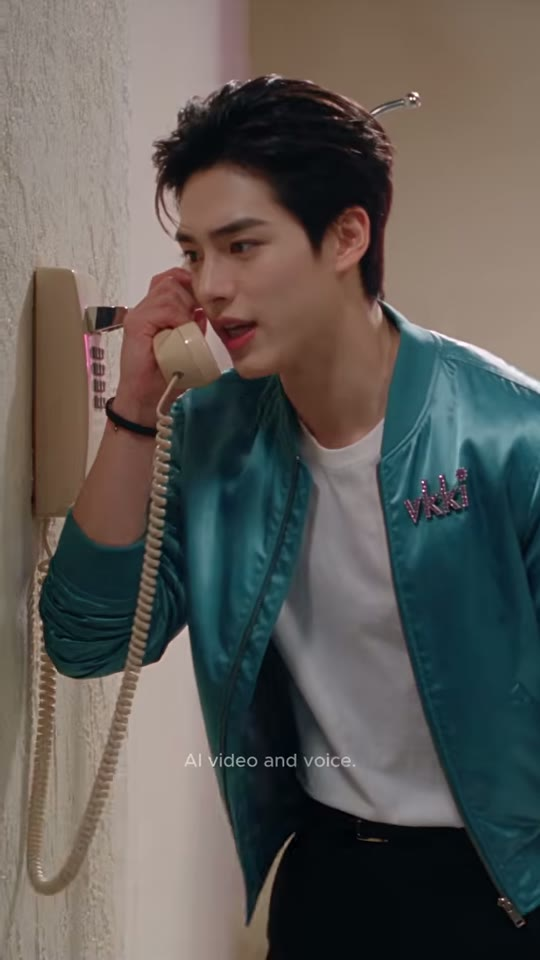
문(A)
매니저(A)
남주(A, 달리는 중)
히터(A)
벽전화(B)
남주(B)
샷WS(0~2.00) → MS(2.00~4.29) — 한 측정컷 안에 2셋업(2.00초 숨은 하드컷, scene score 0.22)앵글아이레벨 정면 / B는 벽 쪽 약간 측면카메라A: 고정(인물이 프레임을 가로질러 달림). B: 고정, 인물이 모션블러와 함께 프레임 안으로 돌진해 들어옴(숨은 컷을 가리는 액션 컷)구도A: 문(중앙 약간 왼쪽, 어두운 입구)과 매니저(오른쪽 1/3, 문 옆)가 대칭, 전경 오른쪽 하단에 켜진 히터, 왼쪽에 의자 3개와 핑크 네온. 남주가 문에서 튀어나와 왼쪽으로 달려 나감. B: 벽걸이 전화기가 왼쪽 가장자리, 남주가 오른쪽 3/4을 채움(수화기 귀에 댐), 뒤로 코트 행거.동작A(0~2.00): 매니저가 보온병으로 차를 따르며 무심하게 'You're late.' — 남주가 문에서 헐레벌떡 뛰어 들어와 왼쪽으로 달려감. B(2.00~4.29): 남주가 벽걸이 전화 수화기를 낚아채 귀에 대고 다급하게 누나에게 전화, 영어로 '버스를 놓쳤다'를 말하려다 막힘('go… me, no…'), 'what do I say?'대사매니저: "You're late." (0.95~) / 남주(전화): "Noona— … go… me, no… what do I say?" (자동자막 'Do not bus go me no', 추정 대사)화면 자막"You're late."(0.95~1.90, 매니저 옆 x≈69% y≈34%) → "Noona —"(2.30~2.85, y≈47%) → "go... me, no..."(2.90~3.30, y≈42%) → "what do I say?"(3.35~4.29, y≈43%) — 전부 흰색, 하이라이트 없음들어오는 전환영상 시작(페이드 없음). 내부 2.00초 액션 하드컷(뛰어가는 방향=전화기 방향으로 매치)효과음/음악문 벌컥+뛰는 발소리(추정), 수화기 들어 올리는 딸깍(추정). BGM 거의 없음(무대사 구간 -49dB 실측)역할훅: 0.9초 만에 '지각' 갈등 제시 + 전화로 SOS → 무엇을 말해야 하는지 시청자도 궁금해짐
1순위
veo-3-1와이드 공간·전신 동선(뛰어 들어옴/앉기) 물리 자연스러움
2순위
kling-v3첫 프레임 고정 image2video 안정
3순위
wan-v3-0저비용 환경컷 대안
① 이미지 프롬프트 (원본 클론)photoreal cinematic live-action, vertical 9:16, 608x1080 composition, retro 1980s-90s Korean talent-agency waiting room: pale cream plaster walls (#E9DFCF), a beige wooden panel door, a row of vintage wooden school chairs with steel legs, a pink-and-cyan neon sign (curved rainbow/fish shape) on the wall, a glowing orange quartz electric heater on the floor, a chrome coat rack, light grey vinyl floor with soft reflections, warm soft diffused light, pastel color grade, subtle film grain. Wide eye-level frontal shot: the beige door slightly left of center with a dark doorway, his manager, a Korean woman in her 20s with a glossy black chin-length bob with blunt bangs, gold hoop earrings, big dark eyes, wearing a shiny black satin bomber jacket with a pink embroidered 'vkki' logo on the chest over a hot-pink T-shirt, black trousers, holding a cream vintage thermos flask and a small cream cup standing right of the door pouring tea from the thermos into the cup, the glowing heater in the right foreground, three wooden chairs on the left under the pink neon sign. 28mm lens, f/5.6, deep focus.
② 영상 프롬프트 (원본 클론)Duration 4.29s total, two setups. Setup A (0–2.0s): static wide; the young man (a handsome Korean man in his early 20s, tousled dark brown-black swept-back hair with loose strands, fair skin, rosy lips, wearing a glossy teal satin bomber jacket with a pink embroidered 'vkki' patch on the left chest, a white crew-neck T-shirt, black trousers with a belt, a thin black bracelet) bursts out of the dark doorway and runs toward frame left in a hurry; the manager, pouring tea, says flatly with lip-sync: "You're late." (~0.95s). Hard cut at 2.0s to setup B (2.0–4.29s): medium shot beside a beige wall-mounted telephone at left edge; he lunges into frame with motion blur, grabs the receiver, presses it to his ear and says urgently in broken English: "Noona— … go… me, no… what do I say?"
③ 동물 버전 이미지 프롬프트photoreal cinematic live-action with realistic fur (not cartoon), anthropomorphic animals at human scale, vertical 9:16, same retro agency waiting room (retro 1980s-90s Korean talent-agency waiting room: pale cream plaster walls (#E9DFCF), a beige wooden panel door, a row of vintage wooden school chairs with steel legs, a pink-and-cyan neon sign (curved rainbow/fish shape) on the wall, a glowing orange quartz electric heater on the floor, a chrome coat rack, light grey vinyl floor with soft reflections, warm soft diffused light, pastel color grade, subtle film grain). Wide frontal shot: beige door left of center with a dark doorway, Manager-cat, an anthropomorphic sleek black cat at human scale with a glossy fur 'bob' and blunt fringe on the forehead, big amber eyes, gold hoop earrings, wearing a shiny black satin bomber jacket with a pink 'vkki' logo over a hot-pink T-shirt, holding a cream vintage thermos flask and a small cream cup standing right of the door pouring tea, heater glowing in the right foreground, three wooden chairs under the pink neon. 28mm f/5.6.
④ 동물 버전 영상 프롬프트Duration 4.29s, two setups. A (0–2.0s): Hamjji, an anthropomorphic golden-and-white Syrian hamster at human scale, big glossy black eyes, pink nose, fluffy fur on top of the head swept back like tousled hair, wearing a glossy teal satin bomber jacket with a pink 'vkki' patch, a white T-shirt and black trousers, a thin black bracelet on the wrist bursts out of the doorway and scurries to frame left; Manager-cat, pouring tea, says flatly with mouth-synced animation: "You're late." Hard cut at 2.0s to B: medium shot by the wall phone; Hamjji lunges in with motion blur, grabs the receiver with both paws, presses it to his ear and squeaks urgently: "Noona— … go… me, no… what do I say?"
네거티브[human version] cartoon, anime, 3d render look, plastic skin, extra fingers, deformed hands, fused fingers, warped face, identity drift, double face, text artifacts, misspelled captions, random logos, watermark, subtitles baked in, low resolution, heavy motion blur, jitter, flicker, overexposed, oversaturated, fisheye distortion, dutch angle, letterbox, horizontal 16:9 framing || [animal version] human faces, human skin, realistic human hands (except where specified), creepy uncanny hybrid, mutated paws, extra limbs, cartoon 2D, low-poly, fur clumping artifacts, plastic fur, misspelled text, random logos, baked subtitles, flicker, jitter, 16:9 framing
컷 2 · 오답 공급: 틀린 표현(lose)을 들여옴 — 빨강으로 '이건 틀림' 복선
4.29s → 5.96s (1.67s)
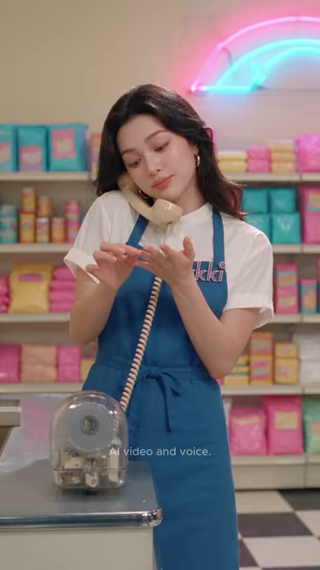
누나
투명 전화기
네온
샷MS앵글아이레벨 정면카메라고정구도누나가 화면 중앙~오른쪽(몸 x 35~90%), 어깨와 귀 사이에 수화기를 끼움. 왼쪽 하단 카운터 위 투명 전화기, 배경 파스텔 스낵 선반, 오른쪽 상단 네온 무지개, 오른쪽 하단 체커 바닥.동작누나가 어깨로 수화기를 받친 채 두 손을 모아 손가락을 세듯 만지작거리며 'Hmm…' 고민 → 확신 없이 ''I lost the bus.''를 알려줌(틀린 정답).대사누나(전화): "Hmm… 'I lost the bus.'"화면 자막"Hmm..."(4.40~4.95, 흰색, y≈38%) → "'I lost the bus.'"(5.00~5.88) — 'lost' 빨간색(#E8323C, 틀린 단어 표시), y≈38%들어오는 전환하드컷 (전화 상대 공간으로 점프 = 컷백 편집)효과음/음악수화기 너머 룸톤(추정)역할오답 공급: 틀린 표현(lose)을 들여옴 — 빨강으로 '이건 틀림' 복선
1순위
minimax-h3대사 립싱크+음성 동시 생성, 무료 — 대사컷 기본
2순위
seedance-2-5원본 해시태그(#seedance25) 계열, 피부·표정 질감 동일 톤
3순위
kling-v3-omni레퍼런스 이미지로 얼굴 고정+립싱크
① 이미지 프롬프트 (원본 클론)photoreal cinematic live-action, vertical 9:16, 608x1080 composition, small retro snack store: shelves packed with pastel teal, pink and yellow snack bags and jars, a pink-and-cyan neon rainbow sign at top right, black-and-white checkerboard floor, a steel counter with a transparent retro telephone (clear body showing inner parts) with a coiled cream cord, bright even warm light. Medium eye-level shot of his older sister ('noona'), a Korean woman in her late 20s with long wavy dark-brown hair, gold hoop earrings, glowing skin, wearing a white short-sleeve blouse under a royal-blue work apron with a white 'vkki' logo, standing behind the counter, holding the cream handset between her ear and shoulder, both hands together in front of her chest counting on her fingers, thoughtful face. The clear retro telephone with a coiled cord sits on the counter lower-left. 35mm f/2.8.
② 영상 프롬프트 (원본 클론)Duration 1.67s. Static. She fiddles with her fingers, hums "Hmm…" thoughtfully, then says with lip-sync, a bit unsure: "I lost the bus." Warm female voice, casual.
③ 동물 버전 이미지 프롬프트photoreal cinematic live-action with realistic fur (not cartoon), anthropomorphic animals at human scale, vertical 9:16, small retro snack store: shelves packed with pastel teal, pink and yellow snack bags and jars, a pink-and-cyan neon rainbow sign at top right, black-and-white checkerboard floor, a steel counter with a transparent retro telephone (clear body showing inner parts) with a coiled cream cord, bright even warm light. Medium shot of Noona-cat, an anthropomorphic calico cat at human scale with long wavy fur around the face, gold hoop earrings, wearing a white short-sleeve blouse under a royal-blue work apron with a white 'vkki' logo, holding the handset between ear and shoulder, paws together counting on her toe-beans, thoughtful. Clear retro phone on the counter lower-left. 35mm f/2.8.
④ 동물 버전 영상 프롬프트Duration 1.67s. Noona-cat fiddles with her paws, hums "Hmm…", then says with mouth-synced animation: "I lost the bus."
네거티브[human version] cartoon, anime, 3d render look, plastic skin, extra fingers, deformed hands, fused fingers, warped face, identity drift, double face, text artifacts, misspelled captions, random logos, watermark, subtitles baked in, low resolution, heavy motion blur, jitter, flicker, overexposed, oversaturated, fisheye distortion, dutch angle, letterbox, horizontal 16:9 framing || [animal version] human faces, human skin, realistic human hands (except where specified), creepy uncanny hybrid, mutated paws, extra limbs, cartoon 2D, low-poly, fur clumping artifacts, plastic fur, misspelled text, random logos, baked subtitles, flicker, jitter, 16:9 framing
컷 3 · 오해 발생: 'lost'를 들은 매니저가 '물건 잃어버림'으로 받아들임
5.96s → 9.13s (3.17s)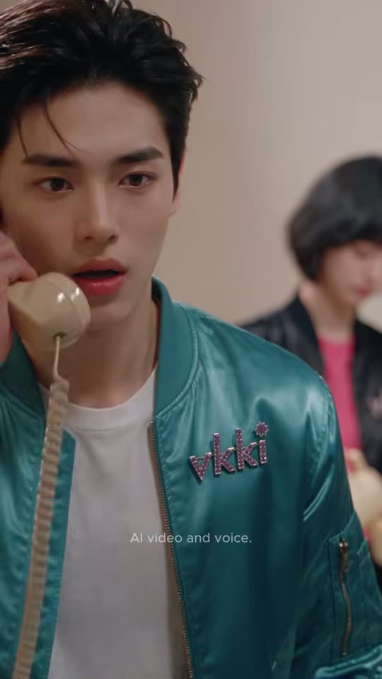

남주(전경)
매니저(배경→초점)
보온병+컵
샷MCU → OTS MS (컷 없이 랙포커스+고개 돌림으로 전환)앵글아이레벨, 남주 쪽 → 매니저 쪽카메라고정 + 랙포커스(남주 얼굴 → 매니저), 미세 아크(추정)구도시작: 남주가 왼쪽 전경 2/3(얼굴 y≈20~40%), 수화기를 귀에서 떼어 든 채 오른쪽 매니저를 봄, 매니저는 오른쪽 뒤에서 흐림. 6.9초경 남주가 매니저 쪽으로 돌아서며 뒤통수가 왼쪽 전경(흐림), 초점이 매니저로 이동 → 매니저 중앙~오른쪽 MS(보온병+컵 들고).동작남주가 수화기를 귀에서 떼고 매니저를 향해 자신 있게 'I lost the bus.'라고 전함 → 매니저가 무표정으로 눈을 깜빡이며 'Where?'(잃어버린 물건 찾듯).대사남주: "I lost the bus." (6.71~) / 매니저: "Where?" (8.40~)화면 자막"I lost the bus." — 'lost' 빨강, 6.71~7.54, y≈52% → "Where?" 흰색, 8.40~9.13, 매니저 옆 x≈64% y≈45%들어오는 전환하드컷 (전화→대기실 복귀)효과음/음악대사 사이 정적(무음 구간 7.52~8.52, 8.85~9.66 실측) — 어색함 연출역할오해 발생: 'lost'를 들은 매니저가 '물건 잃어버림'으로 받아들임
1순위
minimax-h3대사 립싱크+음성 동시 생성, 무료 — 대사컷 기본
2순위
seedance-2-5원본 해시태그(#seedance25) 계열, 피부·표정 질감 동일 톤
3순위
kling-v3-omni레퍼런스 이미지로 얼굴 고정+립싱크
① 이미지 프롬프트 (원본 클론)photoreal cinematic live-action, vertical 9:16, 608x1080 composition, retro 1980s-90s Korean talent-agency waiting room: pale cream plaster walls (#E9DFCF), a beige wooden panel door, a row of vintage wooden school chairs with steel legs, a pink-and-cyan neon sign (curved rainbow/fish shape) on the wall, a glowing orange quartz electric heater on the floor, a chrome coat rack, light grey vinyl floor with soft reflections, warm soft diffused light, pastel color grade, subtle film grain in soft background. Medium close-up: a handsome Korean man in his early 20s, tousled dark brown-black swept-back hair with loose strands, fair skin, rosy lips, wearing a glossy teal satin bomber jacket with a pink embroidered 'vkki' patch on the left chest, a white crew-neck T-shirt, black trousers with a belt, a thin black bracelet in the left foreground occupying two-thirds of the frame, holding the cream handset away from his ear, looking right toward the manager who stands blurred in the right background. 50mm f/2.
② 영상 프롬프트 (원본 클론)Duration 3.17s. Static camera with a focus pull. He says confidently with lip-sync: "I lost the bus." (~0.75s). At ~1.0s he turns his head toward her so the back of his head fills the left foreground and focus racks to his manager, a Korean woman in her 20s with a glossy black chin-length bob with blunt bangs, gold hoop earrings, big dark eyes, wearing a shiny black satin bomber jacket with a pink embroidered 'vkki' logo on the chest over a hot-pink T-shirt, black trousers, holding a cream vintage thermos flask and a small cream cup, who blinks, pauses awkwardly (1s silence) and asks flatly: "Where?" (~2.45s).
③ 동물 버전 이미지 프롬프트photoreal cinematic live-action with realistic fur (not cartoon), anthropomorphic animals at human scale, vertical 9:16, waiting room in soft background. Medium close-up of Hamjji, an anthropomorphic golden-and-white Syrian hamster at human scale, big glossy black eyes, pink nose, fluffy fur on top of the head swept back like tousled hair, wearing a glossy teal satin bomber jacket with a pink 'vkki' patch, a white T-shirt and black trousers, a thin black bracelet on the wrist in the left foreground holding the handset away from his ear, looking right toward Manager-cat blurred in the background. 50mm f/2.
④ 동물 버전 영상 프롬프트Duration 3.17s. Hamjji says proudly with mouth-synced animation: "I lost the bus." He turns his head; focus racks to Manager-cat, an anthropomorphic sleek black cat at human scale with a glossy fur 'bob' and blunt fringe on the forehead, big amber eyes, gold hoop earrings, wearing a shiny black satin bomber jacket with a pink 'vkki' logo over a hot-pink T-shirt, holding a cream vintage thermos flask and a small cream cup, who blinks slowly, awkward 1-second pause, then asks flatly: "Where?"
네거티브[human version] cartoon, anime, 3d render look, plastic skin, extra fingers, deformed hands, fused fingers, warped face, identity drift, double face, text artifacts, misspelled captions, random logos, watermark, subtitles baked in, low resolution, heavy motion blur, jitter, flicker, overexposed, oversaturated, fisheye distortion, dutch angle, letterbox, horizontal 16:9 framing || [animal version] human faces, human skin, realistic human hands (except where specified), creepy uncanny hybrid, mutated paws, extra limbs, cartoon 2D, low-poly, fur clumping artifacts, plastic fur, misspelled text, random logos, baked subtitles, flicker, jitter, 16:9 framing
컷 4 · 시각 개그 펀치: 'lost=잃어버림' 오해를 몸으로 과장(설명란 'searche
9.13s → 12.71s (3.58s)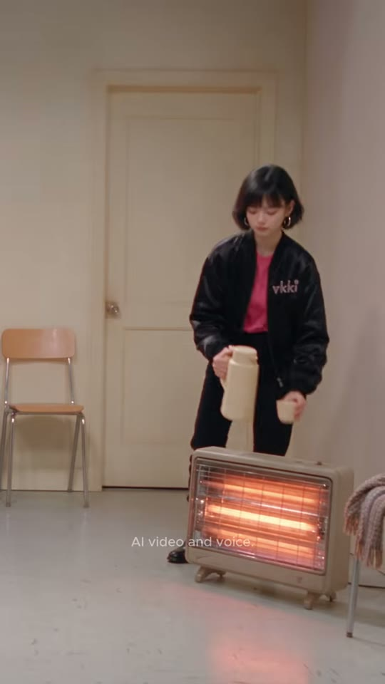


매니저
히터
보온병
의자
샷WS앵글아이레벨 정면카메라고정구도매니저가 중앙(문 앞), 전경 중앙 하단에 빛나는 히터, 왼쪽에 의자 1개, 오른쪽 가장자리 담요. 전신 코미디를 위해 넉넉한 여백.동작매니저가 컵을 내려놓고 허리를 숙여 히터 밑·옆을 들여다보고, 보온병 뚜껑 쪽까지 기웃거리며 '버스'를 찾는 코믹 수색 → 다시 일어나 두 손으로 크기를 가늠하는 제스처 'Big? Yellow?'(노란 스쿨버스를 물건처럼 상상).대사매니저: "Big? Yellow?" (11.40~)화면 자막"Big? Yellow?" 흰색, 11.40~12.30, 매니저 머리 옆 x≈58% y≈34%들어오는 전환하드컷효과음/음악뒤적거리는 폴리(추정), 정적 구간 다수(9.88~11.01 무음 실측) → 행동 개그를 소리 없이 보여줌. 12.40부터 다음 컷 대사 'No, no!' 선행(J컷)역할시각 개그 펀치: 'lost=잃어버림' 오해를 몸으로 과장(설명란 'searches for his bus under the table and inside her tea flask')
1순위
hailuo-2-3허리 숙여 히터 밑·보온병 속 뒤지는 과장 코믹 동작
2순위
kling-v3전신 동작 안정성
3순위
pixverse-v6빠른 코믹 리액션 대안
① 이미지 프롬프트 (원본 클론)photoreal cinematic live-action, vertical 9:16, 608x1080 composition, retro 1980s-90s Korean talent-agency waiting room: pale cream plaster walls (#E9DFCF), a beige wooden panel door, a row of vintage wooden school chairs with steel legs, a pink-and-cyan neon sign (curved rainbow/fish shape) on the wall, a glowing orange quartz electric heater on the floor, a chrome coat rack, light grey vinyl floor with soft reflections, warm soft diffused light, pastel color grade, subtle film grain. Wide eye-level frontal full-body shot of his manager, a Korean woman in her 20s with a glossy black chin-length bob with blunt bangs, gold hoop earrings, big dark eyes, wearing a shiny black satin bomber jacket with a pink embroidered 'vkki' logo on the chest over a hot-pink T-shirt, black trousers, holding a cream vintage thermos flask and a small cream cup standing in front of the beige door, the glowing quartz heater in the center foreground, a wooden chair on the left. 28mm f/5.6.
② 영상 프롬프트 (원본 클론)Duration 3.58s. Static. She sets the cup down, bends at the waist to peer under and behind the heater, lifts the thermos and peeks inside it as if searching for something tiny, straightens up and shapes a size with both hands asking with lip-sync: "Big? Yellow?" (~2.3s). Deadpan comedic timing, no music.
③ 동물 버전 이미지 프롬프트photoreal cinematic live-action with realistic fur (not cartoon), anthropomorphic animals at human scale, vertical 9:16, retro 1980s-90s Korean talent-agency waiting room: pale cream plaster walls (#E9DFCF), a beige wooden panel door, a row of vintage wooden school chairs with steel legs, a pink-and-cyan neon sign (curved rainbow/fish shape) on the wall, a glowing orange quartz electric heater on the floor, a chrome coat rack, light grey vinyl floor with soft reflections, warm soft diffused light, pastel color grade, subtle film grain. Wide full-body shot of Manager-cat, an anthropomorphic sleek black cat at human scale with a glossy fur 'bob' and blunt fringe on the forehead, big amber eyes, gold hoop earrings, wearing a shiny black satin bomber jacket with a pink 'vkki' logo over a hot-pink T-shirt, holding a cream vintage thermos flask and a small cream cup in front of the beige door, glowing heater center foreground, wooden chair left. 28mm f/5.6.
④ 동물 버전 영상 프롬프트Duration 3.58s. Manager-cat sets the cup down, crouches to sniff under the heater, peeks into the thermos with one eye, tail flicking, then stands and shapes a size with her paws asking with mouth-synced animation: "Big? Yellow?"
네거티브[human version] cartoon, anime, 3d render look, plastic skin, extra fingers, deformed hands, fused fingers, warped face, identity drift, double face, text artifacts, misspelled captions, random logos, watermark, subtitles baked in, low resolution, heavy motion blur, jitter, flicker, overexposed, oversaturated, fisheye distortion, dutch angle, letterbox, horizontal 16:9 framing || [animal version] human faces, human skin, realistic human hands (except where specified), creepy uncanny hybrid, mutated paws, extra limbs, cartoon 2D, low-poly, fur clumping artifacts, plastic fur, misspelled text, random logos, baked subtitles, flicker, jitter, 16:9 framing
컷 5 · 상황 설명 = 정답 힌트('떠나버렸다' → miss 개념)
12.71s → 14.08s (1.38s)
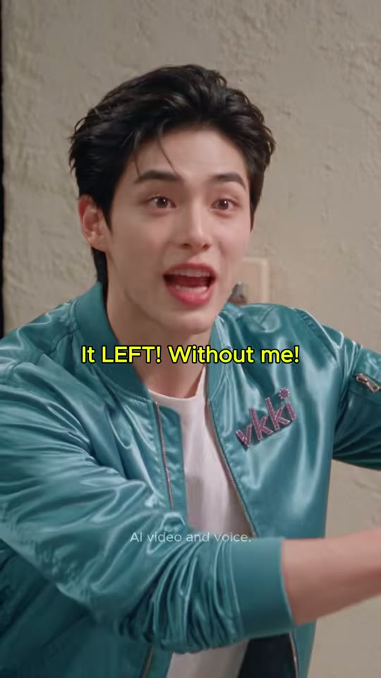
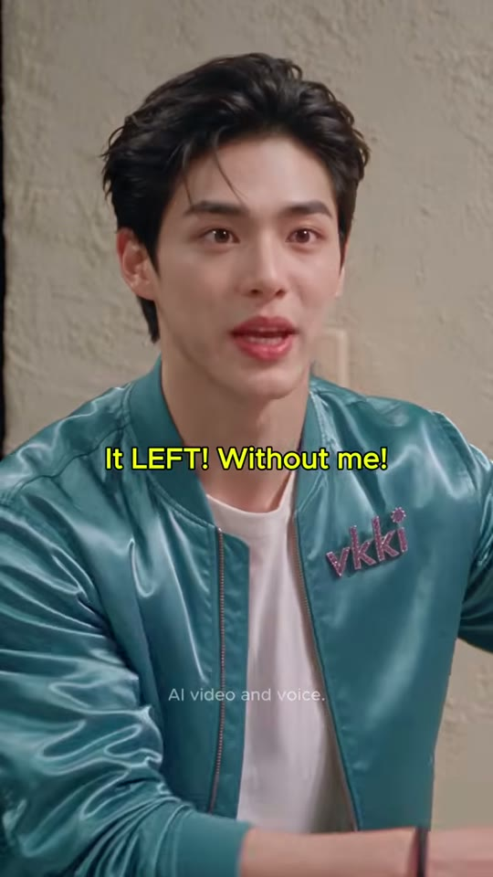
남주
휘두르는 손
샷MCU앵글아이레벨 정면 → 인물이 프레임 왼쪽으로 기울어짐카메라고정구도남주 정면 상반신, 얼굴 중앙 상단(눈 y≈25%), 베이지 질감 벽 배경. 중반에 몸을 왼쪽으로 기울이며 오른팔을 휘둘러 '떠나갔다' 제스처.동작남주가 당황해 'No, no!' 손사래 → 몸을 기울이며 한 팔로 멀리 떠나가는 동작을 그리며 'It LEFT! Without me!' 억울한 표정.대사남주: "No, no! It LEFT! Without me!"화면 자막"No, no!"(12.40~13.15, 흰색, y≈46%) → "It LEFT! Without me!"(13.17~14.25) 문장 전체 노랑(#E8F03C 강조), y≈52%들어오는 전환J컷 (대사 'No, no!'가 12.40에 앞 컷 위에서 먼저 시작 → 12.71 화면 전환)효과음/음악없음(대사만)역할상황 설명 = 정답 힌트('떠나버렸다' → miss 개념)
1순위
minimax-h3대사 립싱크+음성 동시 생성, 무료 — 대사컷 기본
2순위
seedance-2-5원본 해시태그(#seedance25) 계열, 피부·표정 질감 동일 톤
3순위
kling-v3-omni레퍼런스 이미지로 얼굴 고정+립싱크
① 이미지 프롬프트 (원본 클론)photoreal cinematic live-action, vertical 9:16, 608x1080 composition, beige textured plaster wall background. Medium close-up, eye-level frontal: a handsome Korean man in his early 20s, tousled dark brown-black swept-back hair with loose strands, fair skin, rosy lips, wearing a glossy teal satin bomber jacket with a pink embroidered 'vkki' patch on the left chest, a white crew-neck T-shirt, black trousers with a belt, a thin black bracelet, face in the upper center, flustered expression. 50mm f/2.
② 영상 프롬프트 (원본 클론)Duration 1.38s. Static. He waves one hand saying "No, no!" (already started 0.3s before the cut), then leans to frame-left and sweeps his right arm outward as if something drove away, saying with lip-sync, exasperated: "It LEFT! Without me!" (~0.5s).
③ 동물 버전 이미지 프롬프트photoreal cinematic live-action with realistic fur (not cartoon), anthropomorphic animals at human scale, vertical 9:16, beige plaster wall. Medium close-up of Hamjji, an anthropomorphic golden-and-white Syrian hamster at human scale, big glossy black eyes, pink nose, fluffy fur on top of the head swept back like tousled hair, wearing a glossy teal satin bomber jacket with a pink 'vkki' patch, a white T-shirt and black trousers, a thin black bracelet on the wrist, flustered. 50mm f/2.
④ 동물 버전 영상 프롬프트Duration 1.38s. Hamjji waves a paw "No, no!", then leans and sweeps his arm like something drove away, cheeks puffed: "It LEFT! Without me!"
네거티브[human version] cartoon, anime, 3d render look, plastic skin, extra fingers, deformed hands, fused fingers, warped face, identity drift, double face, text artifacts, misspelled captions, random logos, watermark, subtitles baked in, low resolution, heavy motion blur, jitter, flicker, overexposed, oversaturated, fisheye distortion, dutch angle, letterbox, horizontal 16:9 framing || [animal version] human faces, human skin, realistic human hands (except where specified), creepy uncanny hybrid, mutated paws, extra limbs, cartoon 2D, low-poly, fur clumping artifacts, plastic fur, misspelled text, random logos, baked subtitles, flicker, jitter, 16:9 framing
컷 6 · 정답 제시 예고(검지 = 선생님 모드 전환)
14.08s → 15.0s (0.92s)
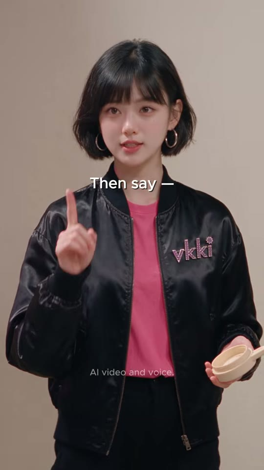
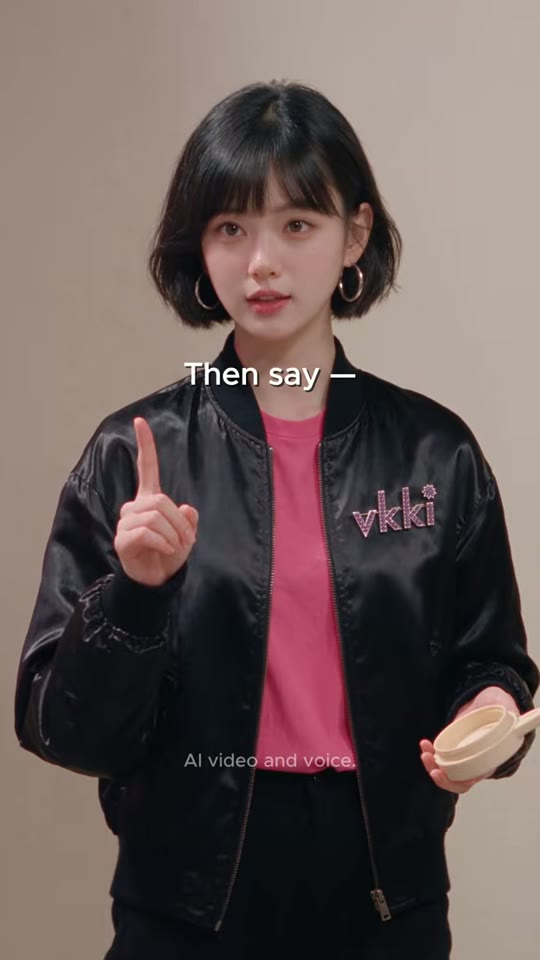
매니저
검지
컵
샷MS앵글아이레벨 정면카메라고정구도매니저 허리 위 정면, 몸 중앙(x 20~90%), 컵을 오른손(화면 오른쪽 하단)에 듦. 베이지 벽 배경.동작앞 컷 대사가 이어지는 동안 매니저는 손으로 '그렇구나' 제스처 → 검지를 세우며 'Then say —'(정답 알려줄게).대사(남주 대사 L컷 지속) → 매니저: "Then say —" (14.30~)화면 자막"It LEFT! Without me!"(L컷 잔류 ~14.25) → "Then say —"(14.30~15.25, 흰색, y≈39%)들어오는 전환L컷 (남주 대사/자막이 매니저 화면 위로 이어짐)효과음/음악없음역할정답 제시 예고(검지 = 선생님 모드 전환)
1순위
minimax-h3대사 립싱크+음성 동시 생성, 무료 — 대사컷 기본
2순위
seedance-2-5원본 해시태그(#seedance25) 계열, 피부·표정 질감 동일 톤
3순위
kling-v3-omni레퍼런스 이미지로 얼굴 고정+립싱크
① 이미지 프롬프트 (원본 클론)photoreal cinematic live-action, vertical 9:16, 608x1080 composition, beige wall background. Medium frontal shot of his manager, a Korean woman in her 20s with a glossy black chin-length bob with blunt bangs, gold hoop earrings, big dark eyes, wearing a shiny black satin bomber jacket with a pink embroidered 'vkki' logo on the chest over a hot-pink T-shirt, black trousers, holding a cream vintage thermos flask and a small cream cup, waist up, holding the small cup in her right hand at lower right, calm knowing face. 50mm f/2.8.
② 영상 프롬프트 (원본 클론)Duration 0.92s. Static. She listens with a small understanding hand gesture, then raises her index finger and says with lip-sync: "Then say —" (~0.25s).
③ 동물 버전 이미지 프롬프트photoreal cinematic live-action with realistic fur (not cartoon), anthropomorphic animals at human scale, vertical 9:16, beige wall. Medium frontal shot of Manager-cat, an anthropomorphic sleek black cat at human scale with a glossy fur 'bob' and blunt fringe on the forehead, big amber eyes, gold hoop earrings, wearing a shiny black satin bomber jacket with a pink 'vkki' logo over a hot-pink T-shirt, holding a cream vintage thermos flask and a small cream cup, waist up, cup in one paw. 50mm f/2.8.
④ 동물 버전 영상 프롬프트Duration 0.92s. Manager-cat nods, then raises one claw-less finger-paw and says with mouth-synced animation: "Then say —"
네거티브[human version] cartoon, anime, 3d render look, plastic skin, extra fingers, deformed hands, fused fingers, warped face, identity drift, double face, text artifacts, misspelled captions, random logos, watermark, subtitles baked in, low resolution, heavy motion blur, jitter, flicker, overexposed, oversaturated, fisheye distortion, dutch angle, letterbox, horizontal 16:9 framing || [animal version] human faces, human skin, realistic human hands (except where specified), creepy uncanny hybrid, mutated paws, extra limbs, cartoon 2D, low-poly, fur clumping artifacts, plastic fur, misspelled text, random logos, baked subtitles, flicker, jitter, 16:9 framing
컷 7 · 정답 문장 시범(핵심 학습 문장)
15.0s → 16.42s (1.42s)
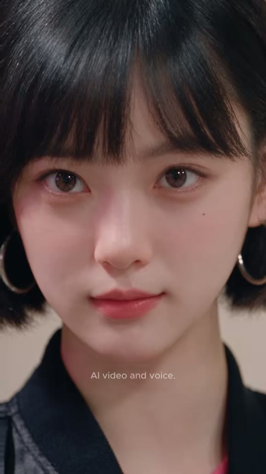
매니저 얼굴
입
샷ECU앵글아이레벨 정면카메라고정구도매니저 얼굴이 화면 전체(눈 y≈40%, 입 y≈65%), 양쪽 금귀걸이가 프레임 가장자리. 자막은 입 바로 아래 y≈69%.동작매니저가 또박또박 천천히 'I missed the bus.' 발음 시범(입모양 강조).대사매니저: "I missed the bus." (15.29~)화면 자막"Then say —"(잔류 ~15.25) → "I missed the bus." — 'missed' 노랑(#E8F03C), 15.29~16.21, y≈69%들어오는 전환하드컷 (MS→ECU 점프인: 정답 문장 집중)효과음/음악없음역할정답 문장 시범(핵심 학습 문장)
1순위
seedance-2-5ECU 미세표정·입모양 정확도(학습 문장 또렷하게)
2순위
minimax-h3대사+오디오 일괄 생성
3순위
veo-3-1립싱크 품질 백업
① 이미지 프롬프트 (원본 클론)photoreal cinematic live-action, vertical 9:16, 608x1080 composition, soft beige background. Extreme close-up of his manager, a Korean woman in her 20s with a glossy black chin-length bob with blunt bangs, gold hoop earrings, big dark eyes, wearing a shiny black satin bomber jacket with a pink embroidered 'vkki' logo on the chest over a hot-pink T-shirt, black trousers, holding a cream vintage thermos flask and a small cream cup's face filling the frame, eyes on the upper-middle, glossy black bangs, gold hoop earrings at the frame edges, flawless skin. 85mm f/1.8.
② 영상 프롬프트 (원본 클론)Duration 1.42s. Static. She articulates slowly and clearly with precise lip-sync: "I missed the bus." (~0.3s), stressing 'missed', then a calm closed-mouth look.
③ 동물 버전 이미지 프롬프트photoreal cinematic live-action with realistic fur (not cartoon), anthropomorphic animals at human scale, vertical 9:16. Extreme close-up of Manager-cat, an anthropomorphic sleek black cat at human scale with a glossy fur 'bob' and blunt fringe on the forehead, big amber eyes, gold hoop earrings, wearing a shiny black satin bomber jacket with a pink 'vkki' logo over a hot-pink T-shirt, holding a cream vintage thermos flask and a small cream cup's face filling the frame, glossy black fur fringe, amber eyes, gold hoops. 85mm f/1.8.
④ 동물 버전 영상 프롬프트Duration 1.42s. Manager-cat articulates slowly with mouth-synced animation: "I missed the bus.", whiskers moving with each word.
네거티브[human version] cartoon, anime, 3d render look, plastic skin, extra fingers, deformed hands, fused fingers, warped face, identity drift, double face, text artifacts, misspelled captions, random logos, watermark, subtitles baked in, low resolution, heavy motion blur, jitter, flicker, overexposed, oversaturated, fisheye distortion, dutch angle, letterbox, horizontal 16:9 framing || [animal version] human faces, human skin, realistic human hands (except where specified), creepy uncanny hybrid, mutated paws, extra limbs, cartoon 2D, low-poly, fur clumping artifacts, plastic fur, misspelled text, random logos, baked subtitles, flicker, jitter, 16:9 framing
컷 8 · 따라 말하기(학습 반복 1)
16.42s → 17.54s (1.13s)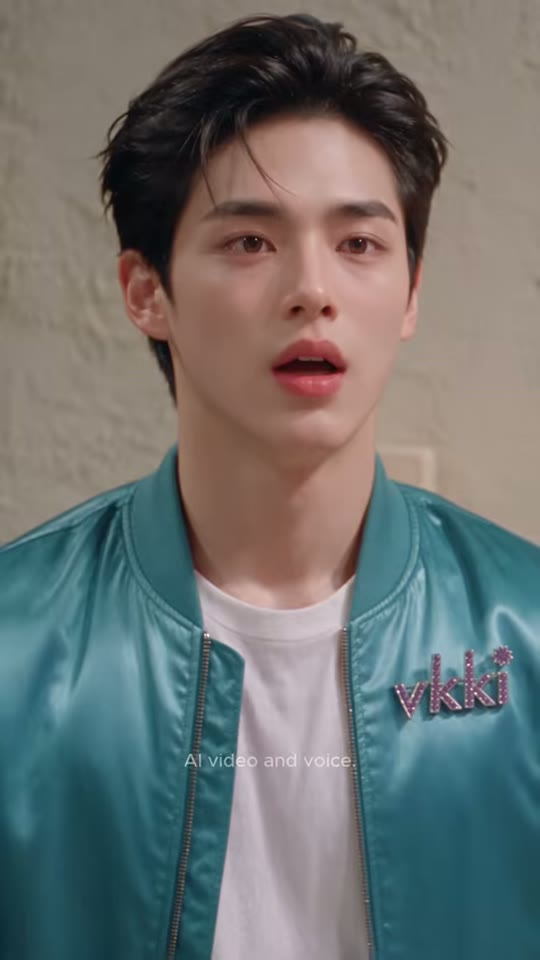

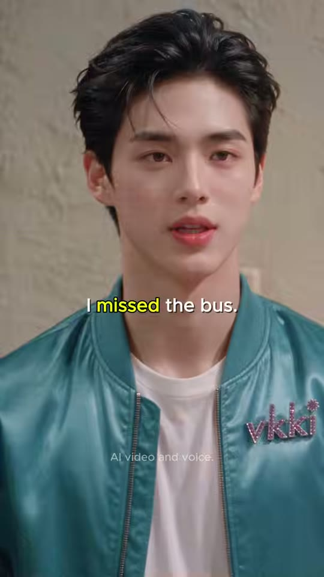
남주
샷MCU앵글아이레벨 정면카메라고정구도5번과 같은 남주 정면(재사용 앵글), 몸 약간 가운데 정렬, 자막 가슴 위 y≈52%.동작남주가 깨달은 듯 따라 말함 'I missed the bus.'(한 박자 늦게 시작).대사남주: "I missed the bus." (16.62~)화면 자막"I missed the bus." — 'missed' 노랑, 16.62~17.54, y≈52%들어오는 전환하드컷효과음/음악정적 0.4초(16.28~16.68) 후 대사역할따라 말하기(학습 반복 1)
1순위
minimax-h3대사 립싱크+음성 동시 생성, 무료 — 대사컷 기본
2순위
seedance-2-5원본 해시태그(#seedance25) 계열, 피부·표정 질감 동일 톤
3순위
kling-v3-omni레퍼런스 이미지로 얼굴 고정+립싱크
① 이미지 프롬프트 (원본 클론)photoreal cinematic live-action, vertical 9:16, 608x1080 composition, beige textured wall. Medium close-up frontal of a handsome Korean man in his early 20s, tousled dark brown-black swept-back hair with loose strands, fair skin, rosy lips, wearing a glossy teal satin bomber jacket with a pink embroidered 'vkki' patch on the left chest, a white crew-neck T-shirt, black trousers with a belt, a thin black bracelet, calm realization face. 50mm f/2.
② 영상 프롬프트 (원본 클론)Duration 1.13s. Static. After a 0.2s beat he repeats with lip-sync: "I missed the bus." carefully, slight nod.
③ 동물 버전 이미지 프롬프트photoreal cinematic live-action with realistic fur (not cartoon), anthropomorphic animals at human scale, vertical 9:16, beige wall. Medium close-up frontal of Hamjji, an anthropomorphic golden-and-white Syrian hamster at human scale, big glossy black eyes, pink nose, fluffy fur on top of the head swept back like tousled hair, wearing a glossy teal satin bomber jacket with a pink 'vkki' patch, a white T-shirt and black trousers, a thin black bracelet on the wrist, realization face. 50mm f/2.
④ 동물 버전 영상 프롬프트Duration 1.13s. After a short beat Hamjji repeats with mouth-synced animation: "I missed the bus.", small nod, whiskers twitch.
네거티브[human version] cartoon, anime, 3d render look, plastic skin, extra fingers, deformed hands, fused fingers, warped face, identity drift, double face, text artifacts, misspelled captions, random logos, watermark, subtitles baked in, low resolution, heavy motion blur, jitter, flicker, overexposed, oversaturated, fisheye distortion, dutch angle, letterbox, horizontal 16:9 framing || [animal version] human faces, human skin, realistic human hands (except where specified), creepy uncanny hybrid, mutated paws, extra limbs, cartoon 2D, low-poly, fur clumping artifacts, plastic fur, misspelled text, random logos, baked subtitles, flicker, jitter, 16:9 framing
컷 9 · 빈칸 퀴즈(시청자 참여)
17.54s → 18.67s (1.13s)

매니저 얼굴
샷ECU앵글아이레벨 정면카메라고정구도7번과 동일 ECU(재사용), 자막 y≈69%.동작매니저가 '다시 한번' 하듯 입을 열어 퀴즈를 냄 — 자막은 빈칸.대사매니저: "I missed the bus."(추정, 자막은 빈칸 처리)화면 자막"I ______ the bus." — 빈칸 밑줄 노랑, 17.54~18.46, y≈69%들어오는 전환하드컷효과음/음악정적 0.4초(18.53~18.93)역할빈칸 퀴즈(시청자 참여)
1순위
seedance-2-5ECU 미세표정·입모양 정확도(학습 문장 또렷하게)
2순위
minimax-h3대사+오디오 일괄 생성
3순위
veo-3-1립싱크 품질 백업
① 이미지 프롬프트 (원본 클론)photoreal cinematic live-action, vertical 9:16, 608x1080 composition. Extreme close-up of his manager, a Korean woman in her 20s with a glossy black chin-length bob with blunt bangs, gold hoop earrings, big dark eyes, wearing a shiny black satin bomber jacket with a pink embroidered 'vkki' logo on the chest over a hot-pink T-shirt, black trousers, holding a cream vintage thermos flask and a small cream cup's face, same framing as the previous ECU. 85mm f/1.8.
② 영상 프롬프트 (원본 클론)Duration 1.13s. Static. She says with lip-sync, prompting like a teacher: "I missed the bus." with slightly raised brows.
③ 동물 버전 이미지 프롬프트photoreal cinematic live-action with realistic fur (not cartoon), anthropomorphic animals at human scale, vertical 9:16. Extreme close-up of Manager-cat, an anthropomorphic sleek black cat at human scale with a glossy fur 'bob' and blunt fringe on the forehead, big amber eyes, gold hoop earrings, wearing a shiny black satin bomber jacket with a pink 'vkki' logo over a hot-pink T-shirt, holding a cream vintage thermos flask and a small cream cup's face, same framing. 85mm f/1.8.
④ 동물 버전 영상 프롬프트Duration 1.13s. Manager-cat prompts like a teacher with mouth-synced animation: "I missed the bus.", brows raised.
네거티브[human version] cartoon, anime, 3d render look, plastic skin, extra fingers, deformed hands, fused fingers, warped face, identity drift, double face, text artifacts, misspelled captions, random logos, watermark, subtitles baked in, low resolution, heavy motion blur, jitter, flicker, overexposed, oversaturated, fisheye distortion, dutch angle, letterbox, horizontal 16:9 framing || [animal version] human faces, human skin, realistic human hands (except where specified), creepy uncanny hybrid, mutated paws, extra limbs, cartoon 2D, low-poly, fur clumping artifacts, plastic fur, misspelled text, random logos, baked subtitles, flicker, jitter, 16:9 framing
컷 10 · 빈칸 퀴즈 2회차(시청자 쉐도잉)
18.67s → 19.79s (1.13s)
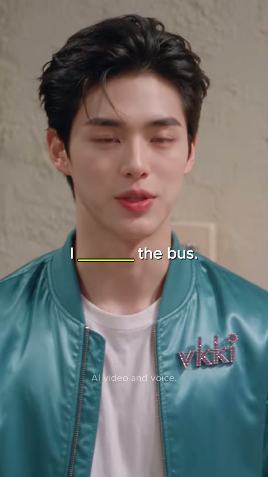

남주
샷MCU앵글아이레벨 정면카메라고정구도8번과 동일(재사용), 자막 y≈53%.동작남주가 눈을 지그시 감았다 뜨며(깨달음/안도) 'I missed the bus.' 다시 말함.대사남주: "I missed the bus."(추정, 자막 빈칸)화면 자막"I ______ the bus." — 빈칸 노랑, 18.88~19.79, y≈53%들어오는 전환하드컷효과음/음악정적 0.4초(19.95~20.37) 후 다음 컷역할빈칸 퀴즈 2회차(시청자 쉐도잉)
1순위
minimax-h3대사 립싱크+음성 동시 생성, 무료 — 대사컷 기본
2순위
seedance-2-5원본 해시태그(#seedance25) 계열, 피부·표정 질감 동일 톤
3순위
kling-v3-omni레퍼런스 이미지로 얼굴 고정+립싱크
① 이미지 프롬프트 (원본 클론)photoreal cinematic live-action, vertical 9:16, 608x1080 composition, beige textured wall. Medium close-up frontal of a handsome Korean man in his early 20s, tousled dark brown-black swept-back hair with loose strands, fair skin, rosy lips, wearing a glossy teal satin bomber jacket with a pink embroidered 'vkki' patch on the left chest, a white crew-neck T-shirt, black trousers with a belt, a thin black bracelet, same framing as before. 50mm f/2.
② 영상 프롬프트 (원본 클론)Duration 1.13s. Static. He slowly closes his eyes, opens them, and says with lip-sync: "I missed the bus." in a relieved tone.
③ 동물 버전 이미지 프롬프트photoreal cinematic live-action with realistic fur (not cartoon), anthropomorphic animals at human scale, vertical 9:16, beige wall. Medium close-up of Hamjji, an anthropomorphic golden-and-white Syrian hamster at human scale, big glossy black eyes, pink nose, fluffy fur on top of the head swept back like tousled hair, wearing a glossy teal satin bomber jacket with a pink 'vkki' patch, a white T-shirt and black trousers, a thin black bracelet on the wrist, same framing. 50mm f/2.
④ 동물 버전 영상 프롬프트Duration 1.13s. Hamjji closes his eyes slowly, opens them, and says with mouth-synced animation, relieved: "I missed the bus."
네거티브[human version] cartoon, anime, 3d render look, plastic skin, extra fingers, deformed hands, fused fingers, warped face, identity drift, double face, text artifacts, misspelled captions, random logos, watermark, subtitles baked in, low resolution, heavy motion blur, jitter, flicker, overexposed, oversaturated, fisheye distortion, dutch angle, letterbox, horizontal 16:9 framing || [animal version] human faces, human skin, realistic human hands (except where specified), creepy uncanny hybrid, mutated paws, extra limbs, cartoon 2D, low-poly, fur clumping artifacts, plastic fur, misspelled text, random logos, baked subtitles, flicker, jitter, 16:9 framing
컷 11 · 해소: 설명란 'the tea starts pouring again' — 정답을 말하자 일
19.79s → 21.13s (1.33s)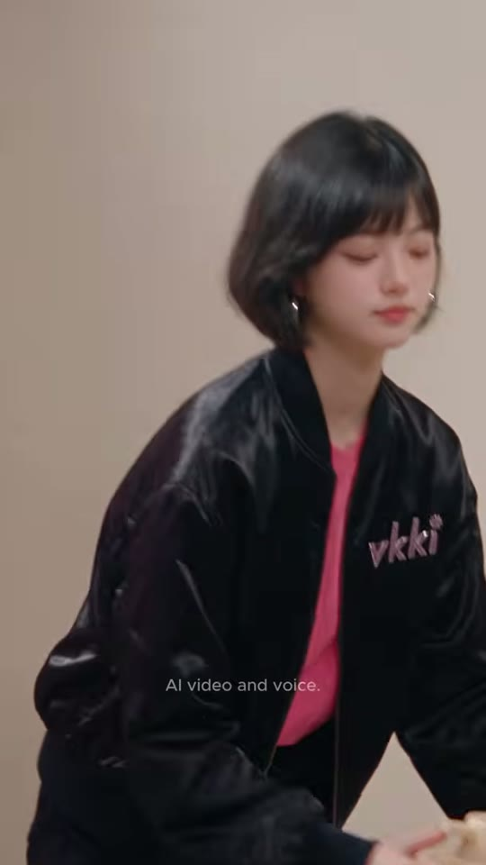
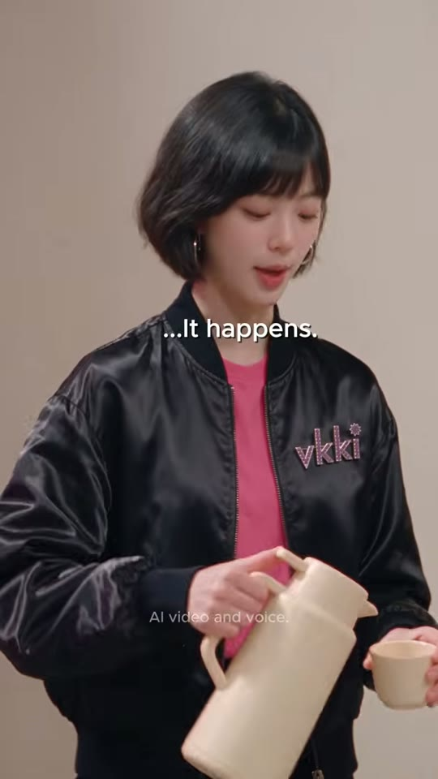

매니저
보온병+컵
샷MS앵글아이레벨, 약간 측면(3/4)카메라고정구도매니저가 화면 중앙~오른쪽, 몸을 살짝 숙여 보온병으로 컵에 차를 따름(보온병·컵이 하단 50~95%). 자막은 얼굴 아래 y≈42%.동작매니저가 시선을 아래로 둔 채 다시 차를 따르며 담담하게 '…It happens.'(그럴 수 있지) — 차가 다시 흐름 = 문제 해결 상징.대사매니저: "…It happens." (19.95~)화면 자막"...It happens." 흰색, 19.95~21.10, x≈56% y≈42%들어오는 전환하드컷효과음/음악차 따르는 졸졸 소리(추정)역할해소: 설명란 'the tea starts pouring again' — 정답을 말하자 일상 복귀
1순위
minimax-h3대사 립싱크+음성 동시 생성, 무료 — 대사컷 기본
2순위
seedance-2-5원본 해시태그(#seedance25) 계열, 피부·표정 질감 동일 톤
3순위
kling-v3-omni레퍼런스 이미지로 얼굴 고정+립싱크
① 이미지 프롬프트 (원본 클론)photoreal cinematic live-action, vertical 9:16, 608x1080 composition, beige wall background. Medium 3/4 shot of his manager, a Korean woman in her 20s with a glossy black chin-length bob with blunt bangs, gold hoop earrings, big dark eyes, wearing a shiny black satin bomber jacket with a pink embroidered 'vkki' logo on the chest over a hot-pink T-shirt, black trousers, holding a cream vintage thermos flask and a small cream cup, slightly bent forward, pouring tea from the cream thermos into the small cup held low, eyes down, soft smile. 50mm f/2.8.
② 영상 프롬프트 (원본 클론)Duration 1.33s. Static. She pours tea steadily and says softly with lip-sync without looking up: "…It happens." (~0.2s).
③ 동물 버전 이미지 프롬프트photoreal cinematic live-action with realistic fur (not cartoon), anthropomorphic animals at human scale, vertical 9:16, beige wall. Medium 3/4 shot of Manager-cat, an anthropomorphic sleek black cat at human scale with a glossy fur 'bob' and blunt fringe on the forehead, big amber eyes, gold hoop earrings, wearing a shiny black satin bomber jacket with a pink 'vkki' logo over a hot-pink T-shirt, holding a cream vintage thermos flask and a small cream cup pouring tea from the thermos into the cup, eyes down, soft smile. 50mm f/2.8.
④ 동물 버전 영상 프롬프트Duration 1.33s. Manager-cat pours tea and says softly with mouth-synced animation: "…It happens.", tail curling.
네거티브[human version] cartoon, anime, 3d render look, plastic skin, extra fingers, deformed hands, fused fingers, warped face, identity drift, double face, text artifacts, misspelled captions, random logos, watermark, subtitles baked in, low resolution, heavy motion blur, jitter, flicker, overexposed, oversaturated, fisheye distortion, dutch angle, letterbox, horizontal 16:9 framing || [animal version] human faces, human skin, realistic human hands (except where specified), creepy uncanny hybrid, mutated paws, extra limbs, cartoon 2D, low-poly, fur clumping artifacts, plastic fur, misspelled text, random logos, baked subtitles, flicker, jitter, 16:9 framing
컷 12 · 펀치라인(오답 준 사람이 뻔뻔하게 수습하는 웃음 포인트)
21.13s → 22.21s (1.08s)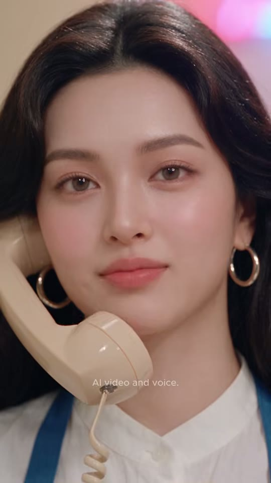


누나 얼굴
수화기
샷CU앵글아이레벨 정면카메라고정구도누나 얼굴 CU(눈 y≈30%), 수화기가 왼쪽 하단에서 귀까지 대각선, 코일선이 하단으로 늘어짐, 상단 가장자리 핑크 네온 번짐.동작누나가 수화기를 귀에 댄 채 살짝 새침하게 '…That's what I meant.'(내 말이 그 말이었어) — 체면 세우는 반전 펀치라인.대사누나(전화): "…That's what I meant." (21.40~)화면 자막"...That's what I meant." 흰색, 21.40~22.60, y≈65% (다음 컷까지 L컷 잔류)들어오는 전환하드컷 (전화 컷백)효과음/음악전화 음성 필터(밴드패스) 없이 풀보이스(추정)역할펀치라인(오답 준 사람이 뻔뻔하게 수습하는 웃음 포인트)
1순위
minimax-h3대사 립싱크+음성 동시 생성, 무료 — 대사컷 기본
2순위
seedance-2-5원본 해시태그(#seedance25) 계열, 피부·표정 질감 동일 톤
3순위
kling-v3-omni레퍼런스 이미지로 얼굴 고정+립싱크
① 이미지 프롬프트 (원본 클론)photoreal cinematic live-action, vertical 9:16, 608x1080 composition, small retro snack store: shelves packed with pastel teal, pink and yellow snack bags and jars, a pink-and-cyan neon rainbow sign at top right, black-and-white checkerboard floor, a steel counter with a transparent retro telephone (clear body showing inner parts) with a coiled cream cord, bright even warm light blurred with pink neon glow at the top edge. Close-up of his older sister ('noona'), a Korean woman in her late 20s with long wavy dark-brown hair, gold hoop earrings, glowing skin, wearing a white short-sleeve blouse under a royal-blue work apron with a white 'vkki' logo, holding the cream handset to her ear, the coiled cord hanging at lower left, composed slightly smug expression. 85mm f/1.8.
② 영상 프롬프트 (원본 클론)Duration 1.08s. Static. She says with lip-sync, casually covering her mistake: "…That's what I meant." (~0.3s), tiny smug smile.
③ 동물 버전 이미지 프롬프트photoreal cinematic live-action with realistic fur (not cartoon), anthropomorphic animals at human scale, vertical 9:16, snack store blurred with pink neon glow. Close-up of Noona-cat, an anthropomorphic calico cat at human scale with long wavy fur around the face, gold hoop earrings, wearing a white short-sleeve blouse under a royal-blue work apron with a white 'vkki' logo holding the handset to her ear. 85mm f/1.8.
④ 동물 버전 영상 프롬프트Duration 1.08s. Noona-cat says with mouth-synced animation, covering her mistake: "…That's what I meant.", ears slightly back, smug half-smile.
네거티브[human version] cartoon, anime, 3d render look, plastic skin, extra fingers, deformed hands, fused fingers, warped face, identity drift, double face, text artifacts, misspelled captions, random logos, watermark, subtitles baked in, low resolution, heavy motion blur, jitter, flicker, overexposed, oversaturated, fisheye distortion, dutch angle, letterbox, horizontal 16:9 framing || [animal version] human faces, human skin, realistic human hands (except where specified), creepy uncanny hybrid, mutated paws, extra limbs, cartoon 2D, low-poly, fur clumping artifacts, plastic fur, misspelled text, random logos, baked subtitles, flicker, jitter, 16:9 framing
컷 13 · 여운/루프: 첫 컷과 같은 대기실로 돌아와 원점 회귀 → 자연스러운 리플레이
22.21s → 23.48s (1.27s)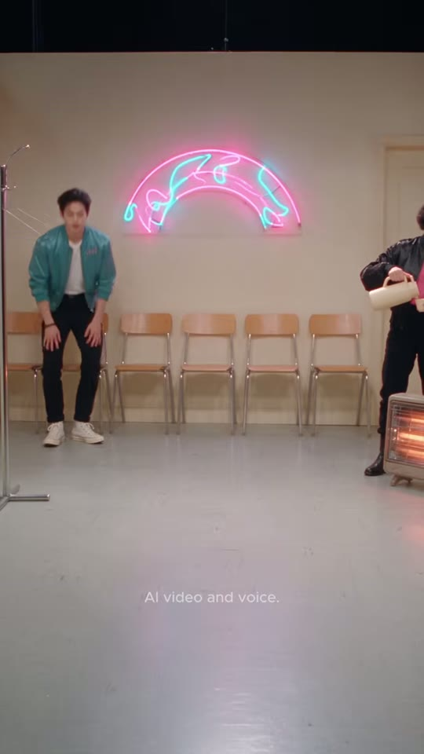
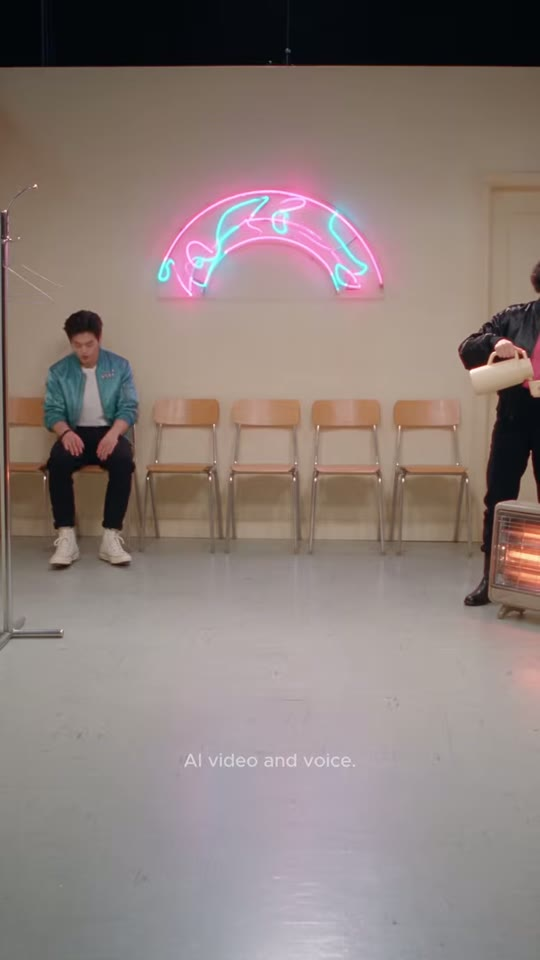
네온
남주
매니저(잘림)
의자 줄
샷EWS앵글아이레벨 정면(약간 하이, 추정)카메라고정구도대기실 전체 정면 대칭: 상단 7% 검은 천장 띠, 핑크·시안 네온이 중앙 상단, 의자 7개가 가로 일렬(y 40~55%), 남주는 왼쪽에서 걸어와 두 번째 의자에 앉음, 매니저는 오른쪽 가장자리에서 반쯤 잘린 채 차를 따름, 하단 45%는 반사되는 바닥 여백.동작남주가 어깨를 늘어뜨리고 걸어와 의자에 털썩 앉으며 작게 'Oh.' — 매니저는 오른쪽에서 여전히 차를 따름. 여운 있는 롱샷으로 종료.대사남주: "Oh." (22.40~)화면 자막"...That's what I meant."(L컷 잔류 ~22.60) 이후 자막 없음들어오는 전환하드컷 (L컷: 누나 대사가 와이드 위로 이어짐)효과음/음악BGM 없음, 룸톤만. 하드 엔드(페이드 없음)역할여운/루프: 첫 컷과 같은 대기실로 돌아와 원점 회귀 → 자연스러운 리플레이
1순위
veo-3-1와이드 공간·전신 동선(뛰어 들어옴/앉기) 물리 자연스러움
2순위
kling-v3첫 프레임 고정 image2video 안정
3순위
wan-v3-0저비용 환경컷 대안
① 이미지 프롬프트 (원본 클론)photoreal cinematic live-action, vertical 9:16, 608x1080 composition, retro 1980s-90s Korean talent-agency waiting room: pale cream plaster walls (#E9DFCF), a beige wooden panel door, a row of vintage wooden school chairs with steel legs, a pink-and-cyan neon sign (curved rainbow/fish shape) on the wall, a glowing orange quartz electric heater on the floor, a chrome coat rack, light grey vinyl floor with soft reflections, warm soft diffused light, pastel color grade, subtle film grain. Extreme wide symmetrical frontal shot of the whole waiting room: a black ceiling band at the very top, the pink-and-cyan neon sign centered high on the cream wall, a row of seven wooden chairs across the middle, a coat rack at the left edge, his manager, a Korean woman in her 20s with a glossy black chin-length bob with blunt bangs, gold hoop earrings, big dark eyes, wearing a shiny black satin bomber jacket with a pink embroidered 'vkki' logo on the chest over a hot-pink T-shirt, black trousers, holding a cream vintage thermos flask and a small cream cup half cut off at the right edge pouring tea beside the glowing heater, lots of reflective grey floor in the lower half. 24mm f/8, deep focus.
② 영상 프롬프트 (원본 클론)Duration 1.27s. Static. a handsome Korean man in his early 20s, tousled dark brown-black swept-back hair with loose strands, fair skin, rosy lips, wearing a glossy teal satin bomber jacket with a pink embroidered 'vkki' patch on the left chest, a white crew-neck T-shirt, black trousers with a belt, a thin black bracelet walks in from the left with slumped shoulders and drops onto the second chair, murmuring "Oh." (~0.2s); the manager keeps pouring tea at the right edge. Quiet room tone, ends abruptly.
③ 동물 버전 이미지 프롬프트photoreal cinematic live-action with realistic fur (not cartoon), anthropomorphic animals at human scale, vertical 9:16, retro 1980s-90s Korean talent-agency waiting room: pale cream plaster walls (#E9DFCF), a beige wooden panel door, a row of vintage wooden school chairs with steel legs, a pink-and-cyan neon sign (curved rainbow/fish shape) on the wall, a glowing orange quartz electric heater on the floor, a chrome coat rack, light grey vinyl floor with soft reflections, warm soft diffused light, pastel color grade, subtle film grain. Extreme wide symmetrical shot of the whole waiting room, neon centered high, seven wooden chairs in a row, Manager-cat, an anthropomorphic sleek black cat at human scale with a glossy fur 'bob' and blunt fringe on the forehead, big amber eyes, gold hoop earrings, wearing a shiny black satin bomber jacket with a pink 'vkki' logo over a hot-pink T-shirt, holding a cream vintage thermos flask and a small cream cup half cut off at the right edge pouring tea beside the heater. 24mm f/8.
④ 동물 버전 영상 프롬프트Duration 1.27s. Hamjji, an anthropomorphic golden-and-white Syrian hamster at human scale, big glossy black eyes, pink nose, fluffy fur on top of the head swept back like tousled hair, wearing a glossy teal satin bomber jacket with a pink 'vkki' patch, a white T-shirt and black trousers, a thin black bracelet on the wrist waddles in from the left with drooping shoulders and plops onto the second chair, squeaking "Oh."; Manager-cat keeps pouring tea. Quiet room tone, abrupt end.
네거티브[human version] cartoon, anime, 3d render look, plastic skin, extra fingers, deformed hands, fused fingers, warped face, identity drift, double face, text artifacts, misspelled captions, random logos, watermark, subtitles baked in, low resolution, heavy motion blur, jitter, flicker, overexposed, oversaturated, fisheye distortion, dutch angle, letterbox, horizontal 16:9 framing || [animal version] human faces, human skin, realistic human hands (except where specified), creepy uncanny hybrid, mutated paws, extra limbs, cartoon 2D, low-poly, fur clumping artifacts, plastic fur, misspelled text, random logos, baked subtitles, flicker, jitter, 16:9 framing
✂️ 편집 키트
타임라인0.00 대기실 WS 'You're late.'+남주 등장 → 2.00 벽전화 MS 'Noona— what do I say?'(숨은 컷) → 4.29 가게 누나 MS 'Hmm… I lost the bus'(오답, 빨강) → 5.96 남주 MCU 'I lost the bus'→랙포커스 매니저 'Where?' → 9.13 WS 매니저 히터·보온병 수색 'Big? Yellow?' → 12.71 남주 MCU 'No, no! It LEFT! Without me!'(J컷 12.40) → 14.08 매니저 MS 'Then say —'(L컷) → 15.00 매니저 ECU 'I missed the bus'(노랑) → 16.42 남주 따라 말함 → 17.54 매니저 ECU 빈칸 퀴즈 → 18.67 남주 빈칸 퀴즈 → 19.79 매니저 차 따르며 '…It happens.' → 21.13 누나 CU '…That's what I meant.' → 22.21 대기실 EWS 남주 착석 'Oh.' → 23.48 하드 엔드. 전부 하드컷(디졸브/페이드 없음).
FFmpeg 명령# === 0) 폴더 구조 (Windows PowerShell/Git Bash 공통, 창 안 뜸) ===
# clips\s01.mp4 ... (각 컷 생성 결과: 오디오=립싱크 대사 포함) / bgm.mp3 / subs.ass / fonts\Poppins-SemiBold.ttf
# 🔴 Poppins SemiBold/Regular TTF를 fonts 폴더에 넣을 것(미설치 시 Arial로 대체돼 자막이 약 25% 좁아짐 — 원본과 크기 불일치)
mkdir norm
# === 1) 컷별 정규화: 정확한 길이(-t)·608x1080·24fps·오디오 44.1k 스테레오 (오디오 없는 컷은 anullsrc로 채움) ===
ffmpeg -nostdin -y -i clips/s01.mp4 -f lavfi -i anullsrc=r=44100:cl=stereo -filter_complex "[0:v]scale=608:1080:force_original_aspect_ratio=increase,crop=608:1080,fps=24,setsar=1,trim=0:4.292,setpts=PTS-STARTPTS[v];[1:a]atrim=0:4.292[a]" -map "[v]" -map "[a]" -c:v libx264 -crf 15 -preset slow -pix_fmt yuv420p -c:a aac -ar 44100 -ac 2 norm/s01.mp4 # s01 0.0-4.29 (4.292s) — 클립에 대사 오디오가 없을 때(무음 채움)
ffmpeg -nostdin -y -i clips/s02.mp4 -f lavfi -i anullsrc=r=44100:cl=stereo -filter_complex "[0:v]scale=608:1080:force_original_aspect_ratio=increase,crop=608:1080,fps=24,setsar=1,trim=0:1.666,setpts=PTS-STARTPTS[v];[1:a]atrim=0:1.666[a]" -map "[v]" -map "[a]" -c:v libx264 -crf 15 -preset slow -pix_fmt yuv420p -c:a aac -ar 44100 -ac 2 norm/s02.mp4 # s02 4.29-5.96 (1.666s) — 클립에 대사 오디오가 없을 때(무음 채움)
ffmpeg -nostdin -y -i clips/s03.mp4 -f lavfi -i anullsrc=r=44100:cl=stereo -filter_complex "[0:v]scale=608:1080:force_original_aspect_ratio=increase,crop=608:1080,fps=24,setsar=1,trim=0:3.167,setpts=PTS-STARTPTS[v];[1:a]atrim=0:3.167[a]" -map "[v]" -map "[a]" -c:v libx264 -crf 15 -preset slow -pix_fmt yuv420p -c:a aac -ar 44100 -ac 2 norm/s03.mp4 # s03 5.96-9.13 (3.167s) — 클립에 대사 오디오가 없을 때(무음 채움)
ffmpeg -nostdin -y -i clips/s04.mp4 -f lavfi -i anullsrc=r=44100:cl=stereo -filter_complex "[0:v]scale=608:1080:force_original_aspect_ratio=increase,crop=608:1080,fps=24,setsar=1,trim=0:3.583,setpts=PTS-STARTPTS[v];[1:a]atrim=0:3.583[a]" -map "[v]" -map "[a]" -c:v libx264 -crf 15 -preset slow -pix_fmt yuv420p -c:a aac -ar 44100 -ac 2 norm/s04.mp4 # s04 9.13-12.71 (3.583s) — 클립에 대사 오디오가 없을 때(무음 채움)
ffmpeg -nostdin -y -i clips/s05.mp4 -f lavfi -i anullsrc=r=44100:cl=stereo -filter_complex "[0:v]scale=608:1080:force_original_aspect_ratio=increase,crop=608:1080,fps=24,setsar=1,trim=0:1.375,setpts=PTS-STARTPTS[v];[1:a]atrim=0:1.375[a]" -map "[v]" -map "[a]" -c:v libx264 -crf 15 -preset slow -pix_fmt yuv420p -c:a aac -ar 44100 -ac 2 norm/s05.mp4 # s05 12.71-14.08 (1.375s) — 클립에 대사 오디오가 없을 때(무음 채움)
ffmpeg -nostdin -y -i clips/s06.mp4 -f lavfi -i anullsrc=r=44100:cl=stereo -filter_complex "[0:v]scale=608:1080:force_original_aspect_ratio=increase,crop=608:1080,fps=24,setsar=1,trim=0:0.917,setpts=PTS-STARTPTS[v];[1:a]atrim=0:0.917[a]" -map "[v]" -map "[a]" -c:v libx264 -crf 15 -preset slow -pix_fmt yuv420p -c:a aac -ar 44100 -ac 2 norm/s06.mp4 # s06 14.08-15.0 (0.917s) — 클립에 대사 오디오가 없을 때(무음 채움)
ffmpeg -nostdin -y -i clips/s07.mp4 -f lavfi -i anullsrc=r=44100:cl=stereo -filter_complex "[0:v]scale=608:1080:force_original_aspect_ratio=increase,crop=608:1080,fps=24,setsar=1,trim=0:1.417,setpts=PTS-STARTPTS[v];[1:a]atrim=0:1.417[a]" -map "[v]" -map "[a]" -c:v libx264 -crf 15 -preset slow -pix_fmt yuv420p -c:a aac -ar 44100 -ac 2 norm/s07.mp4 # s07 15.0-16.42 (1.417s) — 클립에 대사 오디오가 없을 때(무음 채움)
ffmpeg -nostdin -y -i clips/s08.mp4 -f lavfi -i anullsrc=r=44100:cl=stereo -filter_complex "[0:v]scale=608:1080:force_original_aspect_ratio=increase,crop=608:1080,fps=24,setsar=1,trim=0:1.125,setpts=PTS-STARTPTS[v];[1:a]atrim=0:1.125[a]" -map "[v]" -map "[a]" -c:v libx264 -crf 15 -preset slow -pix_fmt yuv420p -c:a aac -ar 44100 -ac 2 norm/s08.mp4 # s08 16.42-17.54 (1.125s) — 클립에 대사 오디오가 없을 때(무음 채움)
ffmpeg -nostdin -y -i clips/s09.mp4 -f lavfi -i anullsrc=r=44100:cl=stereo -filter_complex "[0:v]scale=608:1080:force_original_aspect_ratio=increase,crop=608:1080,fps=24,setsar=1,trim=0:1.125,setpts=PTS-STARTPTS[v];[1:a]atrim=0:1.125[a]" -map "[v]" -map "[a]" -c:v libx264 -crf 15 -preset slow -pix_fmt yuv420p -c:a aac -ar 44100 -ac 2 norm/s09.mp4 # s09 17.54-18.67 (1.125s) — 클립에 대사 오디오가 없을 때(무음 채움)
ffmpeg -nostdin -y -i clips/s10.mp4 -f lavfi -i anullsrc=r=44100:cl=stereo -filter_complex "[0:v]scale=608:1080:force_original_aspect_ratio=increase,crop=608:1080,fps=24,setsar=1,trim=0:1.125,setpts=PTS-STARTPTS[v];[1:a]atrim=0:1.125[a]" -map "[v]" -map "[a]" -c:v libx264 -crf 15 -preset slow -pix_fmt yuv420p -c:a aac -ar 44100 -ac 2 norm/s10.mp4 # s10 18.67-19.79 (1.125s) — 클립에 대사 오디오가 없을 때(무음 채움)
ffmpeg -nostdin -y -i clips/s11.mp4 -f lavfi -i anullsrc=r=44100:cl=stereo -filter_complex "[0:v]scale=608:1080:force_original_aspect_ratio=increase,crop=608:1080,fps=24,setsar=1,trim=0:1.333,setpts=PTS-STARTPTS[v];[1:a]atrim=0:1.333[a]" -map "[v]" -map "[a]" -c:v libx264 -crf 15 -preset slow -pix_fmt yuv420p -c:a aac -ar 44100 -ac 2 norm/s11.mp4 # s11 19.79-21.13 (1.333s) — 클립에 대사 오디오가 없을 때(무음 채움)
ffmpeg -nostdin -y -i clips/s12.mp4 -f lavfi -i anullsrc=r=44100:cl=stereo -filter_complex "[0:v]scale=608:1080:force_original_aspect_ratio=increase,crop=608:1080,fps=24,setsar=1,trim=0:1.083,setpts=PTS-STARTPTS[v];[1:a]atrim=0:1.083[a]" -map "[v]" -map "[a]" -c:v libx264 -crf 15 -preset slow -pix_fmt yuv420p -c:a aac -ar 44100 -ac 2 norm/s12.mp4 # s12 21.13-22.21 (1.083s) — 클립에 대사 오디오가 없을 때(무음 채움)
ffmpeg -nostdin -y -i clips/s13.mp4 -f lavfi -i anullsrc=r=44100:cl=stereo -filter_complex "[0:v]scale=608:1080:force_original_aspect_ratio=increase,crop=608:1080,fps=24,setsar=1,trim=0:1.267,setpts=PTS-STARTPTS[v];[1:a]atrim=0:1.267[a]" -map "[v]" -map "[a]" -c:v libx264 -crf 15 -preset slow -pix_fmt yuv420p -c:a aac -ar 44100 -ac 2 norm/s13.mp4 # s13 22.21-23.48 (1.267s) — 클립에 대사 오디오가 없을 때(무음 채움)
# 클립에 립싱크 대사 오디오가 있으면 위 줄 대신 이 형태(예: s02, 오디오 유지+부족분 apad):
# ffmpeg -nostdin -y -i clips/s02.mp4 -t 1.666 -vf "scale=608:1080:force_original_aspect_ratio=increase,crop=608:1080,fps=24,setsar=1" -af "aresample=44100,apad" -ac 2 -c:v libx264 -crf 15 -preset slow -pix_fmt yuv420p -c:a aac norm/s02.mp4
# === 2) 이어붙이기 (하드컷 전부, xfade 없음 — 원본에 디졸브 없음) ===
# list.txt 내용: file 'norm/s01.mp4' ... file 'norm/s13.mp4' 한 줄씩
ffmpeg -nostdin -y -f concat -safe 0 -i list.txt -c:v libx264 -crf 15 -preset slow -pix_fmt yuv420p -r 24 -c:a aac -ar 44100 joined.mp4
# === 3) 자막 burn-in + BGM 덕킹 + 라우드니스 (원본 실측 -17.0 LUFS 재현; 쇼츠 표준 -14 원하면 I=-14) ===
ffmpeg -nostdin -y -i joined.mp4 -filter_complex "[0:v]ass=subs.ass:fontsdir=fonts[v];[0:a]aresample=44100,highpass=f=70,loudnorm=I=-17.0:TP=-1.5:LRA=8[a]" -map "[v]" -map "[a]" -t 23.48 -c:v libx264 -crf 17 -preset slow -pix_fmt yuv420p -r 24 -c:a aac -b:a 192k -movflags +faststart final_aznEM9RPlXg.mp4
# === 4) (옵션) 페이드 투 블랙 — 원본은 없음(하드 엔드). 필요할 때만: ===
# ffmpeg -nostdin -y -i final_aznEM9RPlXg.mp4 -vf "fade=t=out:st=22.98:d=0.5" -af "afade=t=out:st=22.98:d=0.5" -c:v libx264 -crf 17 -c:a aac final_aznEM9RPlXg_fade.mp4
# === 5) 검증 ===
ffprobe -v error -show_entries format=duration:stream=width,height,r_frame_rate -of compact final_aznEM9RPlXg.mp4
ffmpeg -nostdin -hide_banner -i final_aznEM9RPlXg.mp4 -af ebur128 -f null - 2>&1 | findstr /C:"I:"
# (참고) 1번 컷은 2셋업이므로 clips/s01a.mp4(2.000s)+clips/s01b.mp4(2.292s)를 먼저 이어 clips/s01.mp4 생성:
ffmpeg -nostdin -y -i clips/s01a.mp4 -i clips/s01b.mp4 -filter_complex "[0:v]scale=608:1080:force_original_aspect_ratio=increase,crop=608:1080,fps=24,setsar=1,trim=0:2.0,setpts=PTS-STARTPTS[a];[1:v]scale=608:1080:force_original_aspect_ratio=increase,crop=608:1080,fps=24,setsar=1,trim=0:2.292,setpts=PTS-STARTPTS[b];[a][b]concat=n=2:v=1:a=0[v]" -map "[v]" -an -c:v libx264 -crf 15 -pix_fmt yuv420p clips/s01.mp4
ASS 자막 스타일[Script Info]
ScriptType: v4.00+
PlayResX: 608
PlayResY: 1080
WrapStyle: 2
ScaledBorderAndShadow: yes
[V4+ Styles]
Format: Name, Fontname, Fontsize, PrimaryColour, SecondaryColour, OutlineColour, BackColour, Bold, Italic, Underline, StrikeOut, ScaleX, ScaleY, Spacing, Angle, BorderStyle, Outline, Shadow, Alignment, MarginL, MarginR, MarginV, Encoding
Style: Line,Poppins SemiBold,36,&H00FFFFFF,&H00FFFFFF,&H00101010,&H99000000,0,0,0,0,100,100,0,0,1,1.4,1.6,5,20,20,0,1
Style: Disclose,Poppins,17,&H4DFFFFFF,&H4DFFFFFF,&H00000000,&H00000000,0,0,0,0,100,100,0.5,0,1,0,0.6,5,0,0,0,1
[Events]
Format: Layer, Start, End, Style, Name, MarginL, MarginR, MarginV, Effect, Text
Dialogue: 0,0:00:00.00,0:00:23.48,Disclose,,0,0,0,,{\pos(304,855)}AI video and voice.
Dialogue: 1,0:00:00.95,0:00:01.90,Line,,0,0,0,,{\pos(420,368)}You're late.
Dialogue: 1,0:00:02.30,0:00:02.85,Line,,0,0,0,,{\pos(310,511)}Noona —
Dialogue: 1,0:00:02.90,0:00:03.30,Line,,0,0,0,,{\pos(298,456)}go... me, no...
Dialogue: 1,0:00:03.35,0:00:04.29,Line,,0,0,0,,{\pos(280,462)}what do I say?
Dialogue: 1,0:00:04.40,0:00:04.95,Line,,0,0,0,,{\pos(304,410)}Hmm...
Dialogue: 1,0:00:05.00,0:00:05.88,Line,,0,0,0,,{\pos(304,410)}'I {\c&H003C32E8&}lost{\c&H00FFFFFF&} the bus.'
Dialogue: 1,0:00:06.71,0:00:07.54,Line,,0,0,0,,{\pos(286,565)}I {\c&H003C32E8&}lost{\c&H00FFFFFF&} the bus.
Dialogue: 1,0:00:08.40,0:00:09.13,Line,,0,0,0,,{\pos(389,481)}Where?
Dialogue: 1,0:00:11.40,0:00:12.30,Line,,0,0,0,,{\pos(352,366)}Big? Yellow?
Dialogue: 1,0:00:12.40,0:00:13.15,Line,,0,0,0,,{\pos(340,497)}No, no!
Dialogue: 1,0:00:13.17,0:00:14.25,Line,,0,0,0,,{\pos(304,563)}{\c&H003CF0E8&}It LEFT! Without me!
Dialogue: 1,0:00:14.30,0:00:15.25,Line,,0,0,0,,{\pos(288,420)}Then say —
Dialogue: 1,0:00:15.29,0:00:16.21,Line,,0,0,0,,{\pos(300,749)}I {\c&H003CF0E8&}missed{\c&H00FFFFFF&} the bus.
Dialogue: 1,0:00:16.62,0:00:17.54,Line,,0,0,0,,{\pos(304,569)}I {\c&H003CF0E8&}missed{\c&H00FFFFFF&} the bus.
Dialogue: 1,0:00:17.54,0:00:18.46,Line,,0,0,0,,{\pos(304,750)}I {\c&H003CF0E8&}______{\c&H00FFFFFF&} the bus.
Dialogue: 1,0:00:18.88,0:00:19.79,Line,,0,0,0,,{\pos(304,575)}I {\c&H003CF0E8&}______{\c&H00FFFFFF&} the bus.
Dialogue: 1,0:00:19.95,0:00:21.10,Line,,0,0,0,,{\pos(342,453)}...It happens.
Dialogue: 1,0:00:21.40,0:00:22.60,Line,,0,0,0,,{\pos(304,706)}...That's what I meant.
HyperFrames 편집 프롬프트 (Claude에 그대로 붙여넣기)HyperFrames로 608x1080, 24fps, 총 23475ms 세로 쇼츠를 만들어줘. 클립 clips/s01~s13.mp4, 전부 하드컷(트랜지션 0ms). 컷 타이밍(ms): s01 0-4292(내부 2000ms에 셋업 전환: s01a 0-2000 대기실 와이드 / s01b 2000-4292 벽전화) / s02 4292-5958 / s03 5958-9125 / s04 9125-12708 / s05 12708-14083 / s06 14083-15000 / s07 15000-16417 / s08 16417-17542 / s09 17542-18667 / s10 18667-19792 / s11 19792-21125 / s12 21125-22208 / s13 22208-23475.
자막: Poppins SemiBold 36px, 흰색, 1.4px 검정 외곽선 + 드롭섀도(0 2px 4px rgba(0,0,0,.6)), 가운데 정렬 한 줄, 애니메이션 없이 즉시 표시/제거. [R:단어]=그 단어만 빨강 #E8323C(틀린 단어), [Y:단어]=그 단어만 노랑 #E8F03C(정답/강조), [Y:______]=노란 밑줄 빈칸. 좌표는 텍스트 중심 x,y(px). 컷 경계를 넘는 자막은 그대로 유지(J/L컷):
950-1900 "You're late." x420 y368 / 2300-2850 "Noona —" x310 y511 / 2900-3300 "go... me, no..." x298 y456 / 3350-4290 "what do I say?" x280 y462 / 4400-4950 "Hmm..." x304 y410 / 5000-5880 "'I [R:lost] the bus.'" x304 y410 / 6710-7540 "I [R:lost] the bus." x286 y565 / 8400-9130 "Where?" x389 y481 / 11400-12300 "Big? Yellow?" x352 y366 / 12400-13150 "No, no!" x340 y497 / 13170-14250 "[Y:It LEFT! Without me!]" x304 y563 / 14300-15250 "Then say —" x288 y420 / 15290-16210 "I [Y:missed] the bus." x300 y749 / 16620-17540 "I [Y:missed] the bus." x304 y569 / 17540-18460 "I [Y:______] the bus." x304 y750 / 18880-19790 "I [Y:______] the bus." x304 y575 / 19950-21100 "...It happens." x342 y453 / 21400-22600 "...That's what I meant." x304 y706
상시 오버레이: 'AI video and voice.' Poppins Regular 17px 흰색 70%, 중앙 x304 y855, 전 구간.
오디오: 클립 대사 오디오만 사용(BGM 없음), 대사 사이 정적 유지(자르지 말 것). 12400ms부터 s05 대사 'No, no!'를 s04 위에서 선행 재생(J컷). 최종 -17 LUFS, 페이드 인/아웃 없음. 렌더 후 총 프레임 563 확인.
✅ 똑같이 만들기 체크리스트
- 측정 컷 13개 길이를 프레임 단위로 일치 + 1번 컷 내부 2.00초 숨은 셋업 전환 재현
- 틀린 단어 빨강(lost) / 맞는 단어 노랑(missed) 색 코드 엄수
- 자막은 화자 얼굴 근처로 위치 이동, 대사가 컷을 넘으면 자막도 잔류(12.40 J컷, 14.08·22.21 L컷)
- BGM 넣지 말 것 — 대사 사이 정적(0.4~1.1초)이 코미디 타이밍의 핵심
- 매니저 ECU(7·9번)와 남주 MCU(8·10번)는 같은 첫 프레임에서 생성해 앵글 완전 동일
- 4번 컷 수색 몸개그(히터 밑·보온병 속)는 반드시 전신 와이드로
- 'AI video and voice.' y≈79% 상시, vkki는 의상 자수로만 노출
- 레트로 네온+파스텔 팔레트, 새틴 봄버 광택 유지, 마지막 EWS는 대칭 구도·하드 엔드
🐹 동물 버전 기획남주 → 햄찌(골든 시리안 햄스터, 틸 새틴 봄버), 매니저 → 블랙 고양이 '매니저냥'(털 보브 앞머리·금 후프·블랙 새틴 봄버·보온병), 누나 → 삼색 고양이 '누나냥'(블라우스+로열블루 앞치마). 모든 동물은 사람 크기 의인화로 같은 레트로 대기실/스낵 가게 세트에 두고 구도·렌즈·조명·컷 길이·자막 위치/색(빨강/노랑)은 100% 동일하게 유지. 동물판 추가 개그: 4번 컷에서 매니저냥이 히터 밑 냄새 맡기·보온병 속 한쪽 눈 들여다보기, 햄찌는 볼 부풀리기로 억울함 표현. 대사·학습 포인트(lose vs miss)·빈칸 퀴즈 구조는 변경 금지. 캐릭터 시트 3장 → 전 컷 image2image 레퍼런스 생성, 목소리는 햄찌만 한 톤 높게.
전체 프레임 시트 보기 (타임코드 포함)
전체 흐름
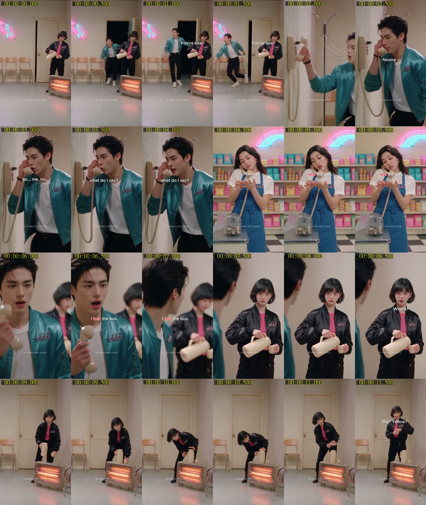
전체 흐름
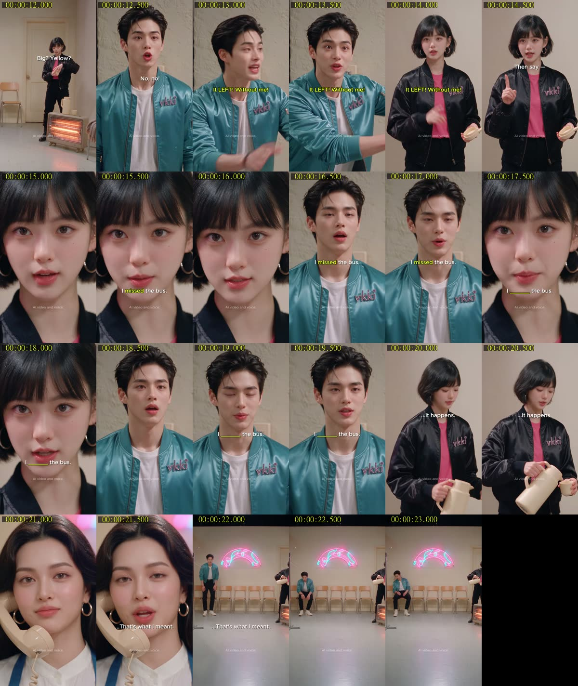